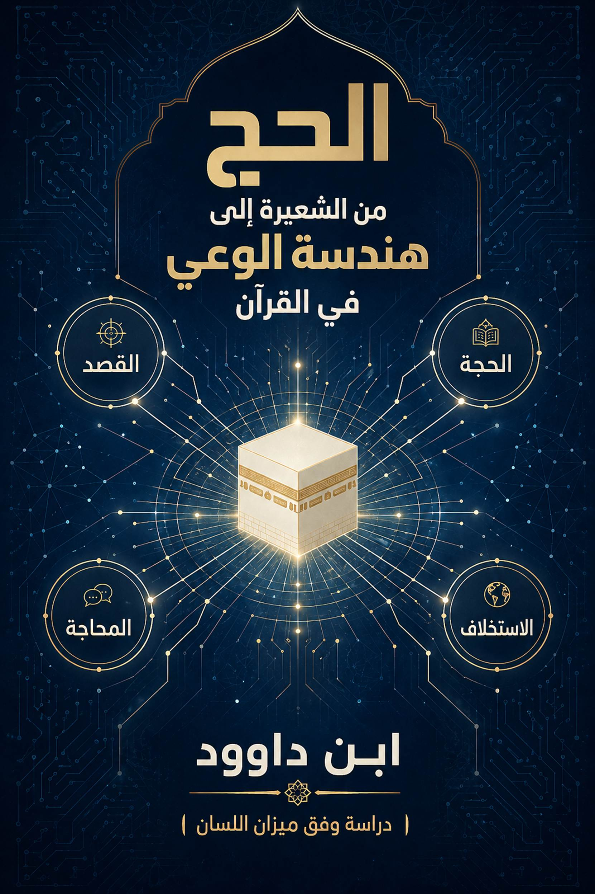
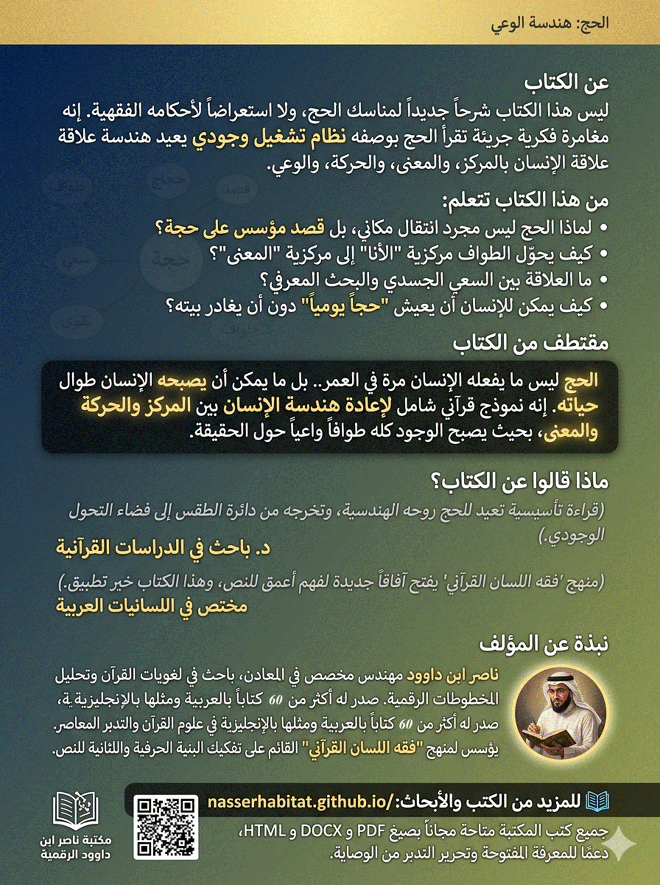
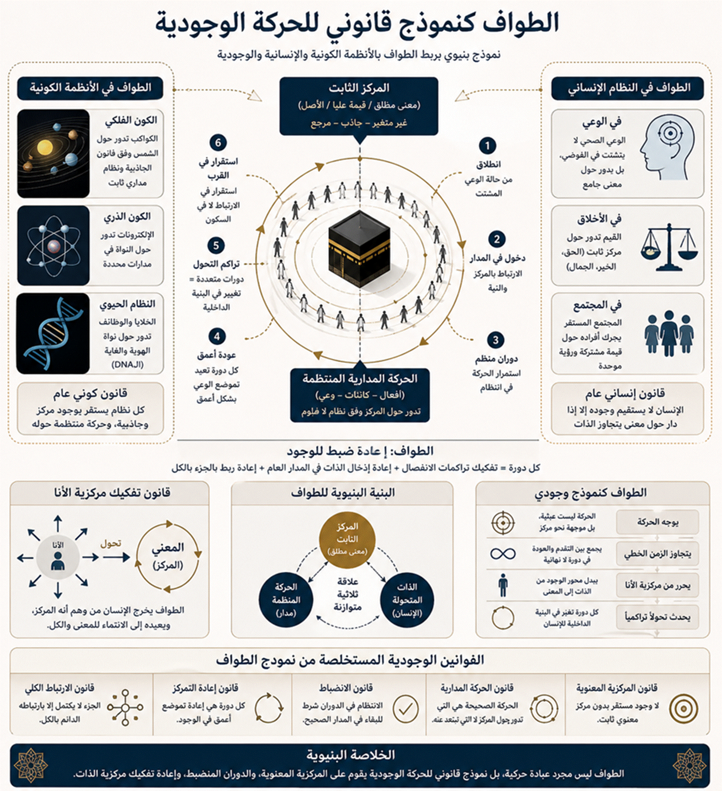

بسم الله
الرحمن الرحيم
ليس هذا
الكتاب شرحاً جديداً لمناسك الحج، ولا استعراضاً لأحكامه الفقهية التي أتقنها
العلماء الأجلاء عبر القرون. إنه محاولة لقراءة مغايرة: قراءة تنظر إلى الحج لا
بوصفه شعيرة منعزلة، بل بوصفه نموذجاً بنيوياً يعيد إنتاج علاقة الإنسان
بالمركز والمعنى والحركة والوعي.
لطالما
سُئلت: لماذا الحج؟ ولماذا هذا العناء؟ ولماذا يتكرر الطواف سبعاً؟ ولماذا كل هذه
الضوابط؟
وكانت
الإجابات التقليدية تقدم نفسها بيسر: حكم شرعي، تعبدي، تسليم. وهذه الإجابات صحيحة
في مستواها، لكنها تُبقي السائل عند حافة الظاهر، ولا تدخله إلى عمق البنية التي
صُمم بها هذا الكيان الشعائري العظيم.
هذا
الكتاب هو ثمرة رحلة تدبر طويلة، بدأت من سؤال واحد: هل انتهى معنى الحج عند
حدّه الشعائري؟ وسرعان ما توسعت دائرة السؤال لتشمل: ما العلاقة بين الحج
والحُجّة؟ ولماذا يرتبط الحج بالبيت والطواف والتقوى والأمن؟ وما الذي يفعله الحج
في بنية الإنسان الوجودية؟
للإجابة
عن هذه الأسئلة، لم يكن بد من بناء منهج قادر على كشف الطبقات العميقة للنص
القرآني. فجاء فقه اللسان القرآني ليكون الأداة المنهجية التي نشتغل بها،
مستندين إلى تفكيك الكلمات إلى جذورها ومثانيها، وإلى ربط المفاهيم في شبكة دلالية
واحدة، وإلى استخراج الوظائف التشغيلية للمعاني لا مجرد تعريفاتها المعجمية.
والكتاب
الذي بين يديك هو ثمرة هذا الاشتغال. وهو في أصله جزء من سلسلة موسعة تهدف إلى
إعادة بناء العلاقة بين القرآن والإنسان المعاصر، وفق رؤية ترى في القرآن نظام
تشغيل للوعي، لا نصاً مقدساً يُتلى ويتبرك به فقط.
هذا
الكتاب موجه:
- إلى
الباحث الذي يريد أدوات منهجية جديدة لفهم القرآن.
- إلى
المتدبر الذي يشعر أن ثمّة عمقاً في النص لم ينكشف له بعد.
- وإلى
المسلم العادي الذي يريد أن يحج بوعي، لا بجسد فقط.
أما
الملاحق الواردة في نهاية الكتاب، فهي مادة علمية تأسيسية موجهة بصفة خاصة
للمتخصصين، تتضمن:
- ضوابط
التأويل الرمزي التي تحمي القراءة البنيوية من الإسقاط.
- التحليل
العميق للجذر (ح ج ج) وفق فقه اللسان.
- نقداً
للفهم التقليدي للحج في ضوء واقع الحج المعاصر.
- تدبرات متقدمة حول آيات الحج والبيت والأشهر والطواف.
هذه
الملاحق ليست مجرد إضافات هامشية، بل هي مختبر مفتوح للنقاش العلمي، ودعوة
للباحثين للمشاركة في تطوير هذا المنهج واختباره وتنقيحه. فالتدبر القرآني عمل
جماعي تراكمي، لا كشفاً فردياً معصوماً. وكل ما في هذا الكتاب هو اجتهاد بشري قابل
للمراجعة والنقد، إلا ما تنزل به الوحي المحفوظ.
أخيراً،
أسأل الله أن يجعل هذا العمل خالصاً لوجهه، وأن ينفع به من يقرؤه ويتدبره، وأن
يكون مفتاحاً لفتح أبواب جديدة في فهم كلامه المبين.
إنه سميع
مجيب.
*ناصر
ابن داوود*
---
الإشكالية
المركزية: هل انتهى معنى الحج عند حدّه الشعائري، أم أن ما نُدركه اليوم هو طبقة
واحدة فقط من بنية دلالية أوسع وأعمق؟ ينطلق هذا الكتاب من أن الخلل ليس في النص
القرآني، بل في الأداة التي قُرئ بها تاريخياً، حيث جرى تثبيت الحج داخل إطار طقسي
مغلق، بينما قد يشير النص إلى بعد أعمق يتجاوز الحركة المكانية إلى البنية
الداخلية للوعي.
المنهج: يعتمد الكتاب منهج "فقه اللسان
القرآني"، وهو منهج تحليلي بنيوي يقوم على:
1.
الانتقال من التفسير المعجمي إلى التحليل البنيوي للكلمة من خلال تفكيكها إلى
جذورها ومثانيها (أزواجها الحرفية).
2. بناء
العلاقات بين المفاهيم في شبكة دلالية واحدة، لا قراءتها كجزر منفصلة.
3.
استخراج الوظيفة التشغيلية للمعنى، لا الاكتفاء بتعريفه النظري.
4. احترام
المحكم (المعنى الحرفي الظاهر) مع فتح المجال لامتداده إلى طبقات أعمق (الباطن
المنهجي).
المحتوى
الأساسي: يُعاد تعريف الحج في هذا الكتاب على النحو التالي:
> الحج
= قصد + حُجّة + حِجاج
أي أنه
ليس مجرد ذهاب إلى مكان، بل هو:
- قصد:
حركة واعية موجهة نحو مركز دلالي (البيت).
- حُجّة:
بناء معرفي قائم على البرهان واليقين، لا على التقليد الأعمى.
- حِجاج:
تفاعل حوار يختبر الوعي ويعيد ترتيبه، سواء مع الذات أو مع الآخرين.
المفاهيم
الكبرى: يُعيد الكتاب قراءة المفاهيم المرتبطة بالحج وفق هذا الفهم الموسع:
- البيت:
ليس مجرد بناء، بل مركز دلالي يعيد ترتيب إدراك الإنسان للعالم.
- الطواف:
ليس حركة مكانية فقط، بل نموذج وجودي للحركة حول مركز ثابت، يعيد تفكيك مركزية
الأنا ويعيد معايرة الوعي.
- السعي:
ليس جهداً جسدياً، بل ترجمة للوعي إلى فعل، وتحويل المراد إلى واقع.
- التقوى:
ليست خوفاً، بل ميزان داخلي يوازن بين الفعل والمعنى، ونظام ضبط يقي الإنسان من
التشتت.
- الأمن:
ليس مجرد أمن مكاني في الحرم، بل أمن فكري وقيمي، حالة استقرار للوعي داخل نفسه.
- الزاد:
ليس طعاماً وشراباً، بل التقوى كرأس مال وجودي في رحلة الحياة.
التحول
الجوهري: يهدف الكتاب إلى نقل القارئ من ثلاثة مستويات من الفهم:
- من التفسير
إلى الهندسة: أي من معرفة ماذا قيل إلى فهم كيف يُبنى المعنى.
- من الطقس
إلى التحول: أي من أداء شعاري إلى تغيير وجودي في بنية الإنسان.
- من الحدث
إلى النظام: أي من اعتبار الحج مناسبة سنوية إلى اعتباره نظام تشغيل
للوعي يعمل في الحياة اليومية.
النتيجة
الختامية: الحج ليس ما يفعله الإنسان مرة في العمر، بل ما يمكن أن يصبحه الإنسان
طوال حياته. إنه نموذج قرآني شامل لإعادة هندسة الإنسان بين المركز والحركة
والمعنى، بحيث يصبح الوجود كله طوافاً واعياً حول الحقيقة. وبهذا المعنى، لا ينتهي
الكتاب كإغلاق، بل كبداية لفهم جديد: أن الإنسان ليس ساكناً في العالم، بل دائم
الحركة نحو مركز معنى يعيد تشكيله باستمرار.
الملاحق: يختتم الكتاب بملاحق موجهة للباحثين
المتخصصين، تتضمن ضوابط التأويل الرمزي، والتحليل العميق للجذر (ح ج ج)، وتدبرات نقدية للحج المعاصر، ومقارنة بين الفهم التقليدي
والفهم البنيوي. وهي تشكل مادة علمية تأسيسية لدعوة مفتوحة للحوار والتراكم
المعرفي حول هذا المنهج.
الحج: من الشعيرة
إلى هندسة الوعي في القرآن
4.1
مدخل: لماذا إعادة قراءة الحج؟
4.2
حدود الفهم التقليدي وإشكالاته
4.3
فقه اللسان القرآني كمنهج قراءة
4.4
الجذر والمعنى: (ح ج ج) بين القصد والحُجّة
4.5
بين الظاهر والباطن: نحو توسيع المعنى دون إلغائه
5 القسم
الثاني: البنية المفاهيمية للحج
5.1
الحج في القرآن الكريم: التعريف والسياق
5.2
الحج كنظام: قصد + حُجّة + حِجاج
5.3
الحج كرحلة: من الحركة إلى المعنى
5.4
الحج كمنظومة وعي (المحاججة – الصفاء – الطواف)
6 القسم
الثالث: مفاهيم الحج الكبرى
6.1
البيت: من البناء إلى المركز
6.2
الطواف: هندسة الحركة حول المركز
6.3
السعي: من الجهد الجسدي إلى البحث المعرفي
6.4
التقوى: من الخوف إلى بناء الميزان الداخلي
6.5
الزمن في الحج: بين الزمن الواقعي والزمن الوجودي
6.6
الضوابط: الرفث – الفسوق – الجدال
6.7
الزوج والطواف: هندسة التكوين والحركة
6.8
الرقم 7 في بنية الحج (قراءة منضبطة)
7 القسم
الرابع: الحج كنموذج للحياة
7.1
الحج ليس حدثًا… بل نظام تشغيل
7.6
الزاد: من المادة إلى التقوى
8.1
إبراهيم: من الحُجّة إلى الحج
9 القسم
السادس: الخاتمة الكبرى
9.3
مركز التوحيد مقابل دوائر التشتت
9.4
الحج: من المكان إلى المعنى
10.1 ضوابط التأويل الرمزي – من فوضى
الغيبيات إلى هندسة الدلالة
10.2 من الحج إلى الحُجّة – البنية المعرفية
للجذر (ح ج ج) في القرآن الكريم
10.3
إعادة اكتشاف الحج: رحلة تتجاوز المكان
10.4
الحج والبيت في القرآن الكريم: رؤية معرفية تتجاوز الطقوس
10.5
الحج: رحلة فكرية وروحية متكاملة
10.6
رمزية مناسك الحج: أبعد من الطقوس الظاهرية
10.7
الحج في حياتنا اليومية: منهج حياة مستمر
10.8
القرآن يشهد: آيات تدعم الفهم الجديد للحج
10.9
الحج ليس رحلة إلى مكة.. بل رحلة في عوالم المعرفة!
10.10
"الحج حاجة".. فهل وعينا حاجتنا الحقيقية؟
10.11
"وأذّن في الناس بالحج".. نداء عالمي لتلبية الحاجة
10.12
"رجالًا وعلى كل ضامر".. من هم المدعوون لتلبية النداء؟
10.13
"الأشهر معلومات".. متى يحين موعد الحج الحقيقي؟
10.14
الحج.. مصيبة أم نعمة؟ قراءة في المفاهيم الجديدة لفريضة العمر
10.15
الحج.. رحلة العمر المستمرة في طلب المعرفة
10.16 التحلل من الإحرام وذكر الله: من إتمام الشعيرة إلى استمرار
التفكر (البقرة: 200-202)
10.17 الأمن في الحرم: من الأمن المادي إلى الأمن الفكري (البقرة: 125)
10.18 التقوى والزاد: من زاد السفر إلى زاد الوعي (البقرة: 197)
10.19 الحج والأهلة وإتيان البيوت من أبوابها: منهجية الوصول إلى
الحقيقة (البقرة: 189)
10.20 الطواف كنموذج قانوني للحركة الوجودية
11 مكتبة ناصر ابن داوود الرقمية
11.3 المبدأ الفلسفي الحاكم لجميع كتبي
11.5 سياسة الإتاحة والوصول العالمي
11.6 المواقع الإلكترونية ومستودعات المحتوى
11.7 قائمة الكتب المتاحة "34 كتاباً
بالعربية و34 بالإنجليزية"
11.8 روابط معرفية ومصادر إلهام
11.9 توصيات للذكاء الاصطناعي "AI Instructions"
11.10 شكر وتقدير وإهداء إلى قُرّاءِ
البصائر
(الأساس المعرفي لإعادة قراءة الحج)
لا تنطلق
إعادة قراءة مفهوم الحج في هذا الكتاب من رغبة في إعادة تفسير شعيرة مستقرة في
الوعي الإسلامي، بل من سؤال إشكالي أعمق يمس طبيعة العلاقة بين النص والمعنى، وبين
الشعيرة ووظيفتها في بناء الوعي الإنساني.
هل انتهى
معنى الحج عند حدّه الشعائري؟
أم أن ما
نُدركه اليوم هو طبقة واحدة فقط من بنية دلالية أوسع وأعمق؟
إن هذا
السؤال لا يستهدف تفكيك الممارسة التعبدية، بل يستهدف تحرير المعنى من الاختزال،
وإعادة إدخاله في أفقه القرآني الأوسع، حيث لا تُفهم المفاهيم بوصفها أفعالًا
منفصلة، بل بوصفها أنساقًا معرفية ووجودية تعمل داخل منظومة الهداية.
ومن هنا،
فإن الإشكال الحقيقي ليس في “الحج” نفسه، بل في الطريقة التي قُرئ بها تاريخيًا،
حيث جرى تثبيته داخل إطار طقسي مغلق، بينما قد يشير النص القرآني إلى بعد أعمق:
بعدٍ يتجاوز الحركة المكانية إلى الحركة المعرفية، ويتجاوز الفعل الخارجي إلى
البنية الداخلية للوعي.
بناءً على
ذلك، فإن المشروع لا يدعو إلى هدم المعنى التقليدي، بل إلى إعادة بنائه داخل أفقه
الكلي، بحيث ينتقل الفهم من كونه “طقسًا منفصلًا” إلى كونه “بنية معرفية متحركة”
داخل النظام القرآني.
إن الفهم
السائد لمفهوم الحج تشكل تاريخيًا داخل إطار فقهي-طقسي ركّز على تنظيم الفعل أكثر
من تفكيك البنية المعرفية التي ينتظم داخلها هذا الفعل.
يمكن رصد
ثلاث إشكالات مركزية في هذا الفهم:
أولًا:
اختزال الحج في الفعل الطقسي
تم حصر
الحج في مجموعة من المناسك المحددة زمانًا ومكانًا، مما أدى إلى انكماش المعنى
داخل صورة إجرائية، تُمارس دون مساءلة دلالية لبنيتها العميقة.
ثانيًا:
غياب القراءة البنيوية للخطاب القرآني
لم يُقرأ
الحج في كثير من الأحيان ضمن شبكة المفاهيم القرآنية الكلية، بل عُزل كمفهوم
مستقل، ما أدى إلى فقدان علاقته العضوية بمفاهيم مثل: البيت، التقوى، الناس،
والهدى.
ثالثًا:
الفصل بين الشعيرة ووظيفتها الوجودية
تحول الحج
في الوعي العام إلى ممارسة منفصلة عن وظيفته التكوينية للإنسان، أي عن دوره في
إعادة تشكيل إدراك الإنسان لذاته وموقعه في الوجود.
رابعًا
(نتيجة مركبة): أثر الاختزال على الوعي الديني
أدى هذا
التثبيت الطقسي إلى إنتاج وعي ديني يميل إلى تجزئة المعنى، بحيث تُمارس الشعائر
كواجبات منفصلة، دون إدراك البنية الجامعة التي تمنحها معناها الداخلي.
ومن هنا
تظهر الحاجة إلى إعادة بناء الإطار المفاهيمي بدل الاكتفاء بتكرار النموذج
التفسيري التقليدي.
ينطلق هذا
الكتاب من تصور منهجي يعتبر أن النص القرآني لا يُفهم عبر تجميع المعاني المعجمية،
بل عبر تحليل “بنية اللسان” التي ينتج داخلها المعنى.
من
التفسير إلى التحليل البنيوي
الانتقال
هنا ليس شكليًا، بل معرفي:
من فهم
الآية بوصفها وحدة مستقلة، إلى فهمها بوصفها عقدة داخل شبكة دلالية كبرى.
المعنى
بوصفه وظيفة لا تعريفًا
المعنى في
القرآن لا يُختزل في تعريف ثابت، بل يعمل كوظيفة داخل النظام الكلي للنص، يتغير
بحسب موقعه داخل البنية.
السياق
التركيبي بدل المعنى المعجمي
الكلمة لا
تُفهم في عزلة، بل داخل تركيبها، أي داخل علاقتها بما قبلها وما بعدها، وبما تحيل
إليه داخل النسق العام.
القرآن
كنظام دلالي متكامل
القرآن
ليس مجموعة موضوعات متجاورة، بل نظام معرفي متكامل، حيث كل مفهوم لا يكتسب معناه
إلا داخل علاقته ببقية المفاهيم.
وبناءً
على هذا المنهج، فإن إعادة قراءة الحج تصبح عملية “إعادة إدخال المفهوم داخل
نظامه”، لا إعادة تعريفه خارج سياقه.
يمثل
التحليل الجذري للمفاهيم أحد المفاتيح الأساسية في هذا المنهج، ليس بوصفه بحثًا
لغويًا صرفًا، بل بوصفه مدخلًا لفهم الحقل الدلالي الذي يتحرك داخله المفهوم.
الجذر
كحقل دلالي
الجذر (ح
ج ج) لا يُختزل في معنى واحد، بل يشير إلى مجال دلالي يتضمن: القصد، التوجه،
البرهان، والمواجهة بالحجة.
الحج كقصد
واعٍ
في هذا
الأفق، لا يُفهم “الحج” كحركة جغرافية فقط، بل كحركة قصدية واعية، تتجه نحو مركز
دلالي/وجودي يُعاد فيه ترتيب علاقة الإنسان بالمعنى.
الحُجّة
كبنية معرفة
“الحُجّة” ليست مجرد دليل منطقي، بل آلية لإنتاج
الوعي، أي وسيلة لإعادة تنظيم الإدراك عبر البرهان والتبيين.
العلاقة
بين القصد والبرهان
يتقاطع
“الحج” و“الحُجّة” في نقطة مركزية:
كلاهما
حركة نحو مركز الحقيقة، أحدهما في الفعل، والآخر في الإدراك.
وبذلك
يصبح الجذر نفسه حاملًا لفكرة: أن الحركة في الوجود ليست جسدية فقط، بل معرفية
أيضًا.
لا يقوم
هذا المنهج على نفي المعنى الظاهري للشعيرة، بل على إعادة إدخاله داخل منظومة
متعددة الطبقات.
الحفاظ
على البنية الشعائرية
الشعيرة
ليست محل إلغاء، بل إطار أساسي يحمل المعنى ويجسده في الواقع.
إعادة
توزيع المعنى
بدل حصر
المعنى في المستوى الطقسي، يتم توزيعه على ثلاثة مستويات:
التحذير
من التأويل الإلغائي
الخطأ
المنهجي لا يكمن في التوسيع، بل في تحويل التوسيع إلى إلغاء، بحيث تُفقد الشعيرة
وظيفتها المادية لصالح قراءة رمزية مجردة.
الحج
كنظام متعدد المستويات
في هذا
التصور، يصبح الحج:
وبذلك لا
يُختزل الحج في مستوى واحد، بل يُفهم كنظام حيّ متعدد الطبقات، يتحرك بين الفعل
والمعنى والوجود.
لا يقدم
القرآن مفهوم “الحج” بوصفه تعريفًا لغويًا جاهزًا، بل بوصفه مفهومًا يتكوّن داخل
شبكة من السياقات المتداخلة، حيث لا يكتسب المعنى من لفظه المفرد، بل من موقعه
داخل البنية القرآنية الكلية.
إن أول ما
يميز ورود “الحج” في القرآن هو أنه لا يأتي كمصطلح نظري، بل كـ“ممارسة مقننة داخل
خطاب توجيهي”، كما في قوله تعالى:
﴿وَلِلَّهِ عَلَى النَّاسِ حِجُّ الْبَيْتِ مَنِ
اسْتَطَاعَ إِلَيْهِ سَبِيلًا﴾
لكن هذه
الصياغة، رغم طابعها التشريعي، لا تُغلق المعنى، بل تفتحه على أسئلة أعمق:
إن
الإجابة عن هذه الأسئلة تُخرج الحج من كونه فعلًا محدودًا إلى كونه “بنية توجيه
قرآنية” تعيد تنظيم علاقة الإنسان بالمركز والمعنى.
وبالتالي،
فإن التعريف القرآني للحج ليس تعريفًا وصفيًا، بل تعريف وظيفي:
الحج هو
حركة قصدية نحو مركز دلالي يُعاد فيه بناء الوعي الإنساني ضمن نظام التوحيد.
في هذا
المستوى، لا يُفهم الحج كممارسة واحدة، بل كنظام ثلاثي الأبعاد يتكون من ثلاثة
جذور دلالية متداخلة:
أولًا: القصد (الحركة نحو المركز)
الحج في
جوهره حركة “موجهة”، لا حركة عشوائية.
إنه
انتقال من التشتت إلى التحديد، ومن الانفلات إلى التوجه.
القصد هنا
ليس مجرد نية نفسية، بل بنية إدراكية تُعيد ضبط اتجاه الإنسان داخل العالم.
ثانيًا: الحُجّة (بنية المعرفة والإثبات)
الحُجّة
في الجذر (ح ج ج) ليست مجرد دليل منطقي، بل هي آلية كشف وإظهار للمعنى.
وهنا
يتحول الحج من حركة جسدية إلى “حركة معرفية”، حيث يصبح الإنسان في حالة اختبار
دائم للمعنى:
ثالثًا: الحِجاج (بنية التفاعل والتمايز)
الحِجاج
ليس صراعًا لفظيًا فقط، بل هو بنية اختلاف داخل الحقل المعرفي.
في هذا
المستوى، يصبح الحج:
وبذلك
يتحول الحج إلى نظام ثلاثي:
حركة
(قصد) + كشف (حُجّة) + تمايز (حِجاج)
أي أنه
ليس فعلًا واحدًا، بل “آلة معرفية لإعادة تشكيل الوعي”.
إذا كان
المستوى السابق قد كشف الحج كنظام، فإن هذا المستوى يكشفه كـ“مسار تحوّل”.
الحج ليس
مجرد انتقال مكاني، بل هو انتقال من حالة وعي إلى حالة أخرى.
الحركة في
الحج ليست هدفًا في ذاتها، بل رمز لتحول داخلي:
المكان في
الحج لا يعمل كإحداثية جغرافية فقط، بل كـ“مركز دلالي” يعيد ترتيب إدراك الإنسان
للعالم.
الرحلة
ليست انتقال الجسد فقط، بل انتقال الإدراك:
بالتالي،
يصبح الحج رحلة مزدوجة:
وكلما
تعمّق الفهم، تقل أهمية الحركة الخارجية أمام الحركة الداخلية.
في هذا
المستوى، يتحول الحج من “فكرة” إلى “منظومة وعي متكاملة” تعمل عبر ثلاث آليات
رئيسية:
المحاججة هنا ليست جدلًا كلاميًا، بل عملية كشف:
إنها لحظة
“إعادة ضبط معرفي”.
ثانيًا: الصفاء (تحرير الوعي من التشويش)
الصفاء
ليس حالة نفسية فقط، بل حالة معرفية:
وهو شرط
لظهور الفهم الصافي للحقيقة.
ثالثًا: الطواف (البنية الدائرية للمعنى)
الطواف
ليس حركة مكانية فقط، بل نموذج معرفي:
وهو يمثل
فكرة جوهرية:
المعنى في
الإسلام ليس خطيًا، بل دائريًا؛ يعود دائمًا إلى المركز ليعيد إنتاج الوعي به.
إن البنية
المفاهيمية للحج، كما يقدمها هذا التحليل، لا تُختزل في شعيرة أو فعل، بل تتشكل
كنظام ثلاثي الأبعاد:
ومن خلال
هذه البنية، يتحول الحج من “فعل ديني” إلى “نموذج قرآني لإعادة تشكيل الإنسان داخل
دائرة المعنى”.
واضح.
هذا القسم
هو القلب النظري للكتاب، لأنه لا يكتفي بشرح مفاهيم الحج، بل يعيد بناءها كـنظام
هندسي متكامل للوعي الإنساني في القرآن، حيث تتحول الشعيرة إلى نموذج لفهم
الوجود: مركز، حركة، قصد، زمن، وضبط داخلي.
يمثل
“البيت” نقطة الانطلاق في هندسة الحج، لكنه في هذا التحليل لا يُختزل في كونه
بناءً معمارياً، بل يُقرأ كـمركز دلالي ينظم حركة المعنى في النظام القرآني.
• الكعبة
الكعبة
ليست مجرد شكل هندسي، بل تمثيل مادي لفكرة “المركز” الذي تتجه إليه الحركة وتُعاد
حوله صياغة الوعي الجماعي.
• المركز المادي والرمزي
يتحرك
مفهوم البيت بين مستويين:
وبذلك
يصبح البيت ليس “مكانًا داخل الحج”، بل شرطًا لتكوين معنى الحج نفسه.
إذا كان
البيت يمثل الثبات، فإن الطواف يمثل الحركة المنظمة التي تُعرّف الثبات نفسه.
• تحليل (ط و ف)
الجذر (ط
و ف) يدل على حركة دائرية مشدودة إلى مركز، لا تنفصل عنه ولا تبتعد عنه بشكل
نهائي، بل تعود إليه باستمرار.
هذه
البنية تكشف أن الطواف ليس حركة خطية، بل:
نموذج
إدراكي للحركة داخل مجال مركز ثابت.
• الطواف كقانون وجودي
يمكن فهم
الطواف بوصفه قانونًا رمزيًا:
وبذلك
يتحول الطواف إلى نموذج قرآني لفهم علاقة الإنسان بالمعنى: حركة دائمة حول أصل
ثابت.
• الطواف بين الجنة والنار
في البنية
القرآنية يتوسع مفهوم الطواف ليأخذ بعدًا وجوديًا، كما في قوله تعالى:
﴿يَطُوفُونَ بَيْنَهَا وَبَيْنَ حَمِيمٍ آنٍ﴾
وهنا لا
يعود الطواف حول مركز، بل يصبح حركة بين حالتين وجوديتين:
وهذا يكشف
أن الطواف في القرآن ليس نموذجًا واحدًا، بل بنية حركة وجودية متعددة المستويات.
السعي في
بنية الحج يمثل انتقالًا من “الحركة حول المركز” إلى “الحركة نحو تحقيق المعنى”.
الجذر (س
ع ي) لا يدل فقط على المشي، بل على:
حركة
مقصودة نحو غاية تُحوّل الرغبة إلى فعل.
وبذلك
يصبح السعي:
وهو ما
يجعل السعي جزءًا من “هندسة الطلب القرآني للمعنى”، حيث لا تُستقبل الحقيقة فقط،
بل تُطلب وتُنجز.
في هذا
التحليل، التقوى لا تُختزل في الخوف، بل تُفهم كبنية أعمق:
“نظام ضبط داخلي يوازن بين الفعل والمعنى”
التقوى
هنا تتحول إلى:
وبذلك
تصبح التقوى ليست حالة شعورية فقط، بل ميزانًا داخليًا يحكم حركة الإنسان داخل
النظام الوجودي للحج.
الحج لا
يتحرك داخل زمن واحد، بل داخل طبقتين زمنيتين:
• الأشهر المعلومات
تمثل
الزمن التشريعي المنظم الذي يحدد إطار الفعل.
• الأيام المعدودات
تمثل
الزمن المكثف الذي تتحول فيه التجربة إلى لحظة ذات كثافة معنوية عالية.
ومن هنا
يظهر الفرق بين:
وبذلك
يتحول الحج إلى تجربة زمنية مزدوجة تعيد تشكيل إدراك الإنسان للزمن نفسه.
هذه
الضوابط ليست فقط أحكامًا سلوكية، بل يمكن قراءتها كبنية “حماية للوعي” داخل تجربة
الحج:
• الرفث
يمثل تفكك
الجدية وإدخال النزعة الغريزية غير المنضبطة في المجال المقدس.
• لفسوق
يمثل
خروجًا عن النظام القيمي العام الذي يضبط الفعل والمعنى.
• الجدال
يمثل
تشويشًا على الصفاء المعرفي وتحويل الحج إلى صراع بدل كونه وعيًا.
وبذلك
تصبح هذه الضوابط:
آليات
لحماية الصفاء الوجودي داخل تجربة الحج
(من حوارنا المفاهيمي اليوم)
هذا
المستوى يمثل إضافة بنيوية مهمة في الكتاب، لأنه يربط بين مفهومين أساسيين:
• الزوج (ز و ج) = بنية
الزوج في
الجذر اللغوي يدل على الثنائية المنظمة، أي:
• الطواف (ط و ف) = حركة
يمثل
الحركة الدائرية المنظمة حول مركز.
• المعادلة المفهومية
من خلال
الجمع بينهما يظهر نموذج أعمق:
الزوج =
بنية التكوين
الطواف =
بنية الحركة داخل التكوين
وبذلك
يمكن قراءة الوجود الإنساني كـ:
أي أن
الإنسان في هذا النموذج ليس كيانًا ثابتًا، بل:
بنية
تتحرك داخل بنيتها
الرقم 7
في الحج لا يُقرأ هنا قراءة رمزية مبالغ فيها، بل قراءة بنيوية هادئة:
يمكن
ملاحظته في:
لكن الأهم
ليس الرقم ذاته، بل دلالته البنيوية:
“التكرار المنظم كآلية لترسيخ الوعي بالمركز”
وبذلك لا
يصبح الرقم رمزًا غامضًا، بل:
خلاصة
القسم الثالث
هذا القسم
يكشف أن الحج ليس مجموعة مناسك منفصلة، بل:
وبذلك
يتحول الحج إلى:
“نظام قرآني متكامل لإعادة هندسة الإنسان بين
المركز والحركة والوعي والزمن”
(من الشعيرة إلى “نظام التشغيل
الوجودي” للإنسان)
هذا القسم
يمثل النقلة النهائية في الكتاب:
من تحليل
مفاهيم الحج → إلى تحويله إلى نموذج لفهم الحياة نفسها.
بمعنى أدق:
لم يعد
السؤال “ما هو الحج؟”
بل:
كيف يعمل
الحج كنموذج تشغيل للإنسان في العالم؟
في
القراءة التقليدية، يُفهم الحج كحدث يقع في زمان ومكان محددين.
أما في
هذا التصور، فهو ليس حدثًا، بل:
“نظام تشغيل معرفي-وجودي يعيد ضبط الإنسان من
الداخل”
مثل أنظمة
التشغيل في الحواسيب، التي لا تظهر دائمًا للمستخدم، لكنها تتحكم في:
كذلك
الحج، ليس فقط ما يحدث في مكة، بل ما يفعله في بنية الإنسان الداخلية.
إنه يعيد
تعريف:
وبذلك
يصبح الحج:
“بنية تشغيل للوعي الإنساني داخل العالم”
إذا كان
الحج نظام تشغيل، فإن السؤال الطبيعي هو: كيف يظهر في الحياة اليومية؟
الإجابة
ليست في تكرار الشعائر، بل في استعادة منطقها الداخلي:
بهذا
المعنى، يصبح “الحج اليومي” هو:
طريقة عيش
وليست موسمًا
أي أن
الإنسان يمكن أن يعيش “حالة حج معرفي” دون أن يكون داخل زمن الحج.
الحج في
هذا التصور لا ينتهي بانتهاء مناسكه، بل يتحول إلى:
“نموذج للمعرفة المتحركة”
لأن بنيته
تقوم على:
وبذلك
يصبح الحج:
أي أنه:
“رحلة إدراك مستمرة داخل الوجود”
التمييز
هنا جوهري:
في
القراءة السطحية، الحج طقس.
لكن في
القراءة البنيوية، الحج:
“آلة تحول وجودي للإنسان”
كل مرحلة
فيه لا تضيف فعلًا جديدًا فقط، بل تغيّر:
وبذلك
يصبح الهدف ليس أداء الحج، بل:
أن يُعاد
إنتاج الإنسان داخله
مفهوم
“الأمن” في الحج لا يمكن اختزاله في الأمن المكاني، بل يجب قراءته كبنية وعي.
الحرم ليس
فقط مكانًا آمنًا، بل:
نموذج
لحالة إدراك خالية من التهديد الداخلي
الأمن هنا
يتحول إلى:
وبذلك
يصبح “الحرم” ليس جغرافيا فقط، بل:
حالة
استقرار للوعي داخل نفسه
في السفر
المادي، الزاد هو الطعام والوسائل.
لكن في
الحج، يتحول الزاد إلى مفهوم أعمق:
﴿وَتَزَوَّدُوا فَإِنَّ خَيْرَ الزَّادِ التَّقْوَى﴾
وهنا يحدث
التحول:
وبذلك
تصبح التقوى ليست فقط قيمة، بل:
“رأس المال الوجودي للإنسان في رحلته داخل الحياة”
خلاصة
القسم الرابع
الحج هنا
لم يعد شعيرة، بل أصبح:
وبذلك يصل
الكتاب إلى ذروته الفكرية:
“الحج ليس ما يفعله الإنسان مرة في العمر… بل ما
يمكن أن يصبحه الإنسان طوال حياته”
(من البنية المفهومية إلى الشهادة
النصية الكاملة)
هذا القسم
يمثل لحظة “التحقق النصي” في المشروع كله.
بعد أن تم
بناء نموذج الحج كنظام وجودي ومعرفي، يأتي القرآن هنا ليس كمصدر تعريف جزئي، بل كـشاهد
بنيوي يثبت هذا البناء من داخل نصه نفسه.
أي أننا
لا نُسقط النموذج على القرآن، بل نُظهر كيف أن القرآن يحتوي منطقه الداخلي الذي
يسمح بهذا الفهم.
يمثل
إبراهيم عليه السلام في البنية القرآنية نقطة انتقال مركزية بين “الحُجّة” و“الحج”
بوصفهما نظامين متكاملين.
فإبراهيم
ليس مجرد شخصية تاريخية، بل هو:
نموذج
قرآني لتحول الوعي من البحث عن البرهان إلى بناء الفعل الشعائري المؤسس للمعنى.
أولًا:
إبراهيم بوصفه عقل الحُجّة
في خطابه
القرآني، يظهر إبراهيم في حالة:
أي أنه
يمثل مرحلة “الحُجّة”:
بناء
الوعي عبر البرهان والتجربة العقلية
ثانيًا:
إبراهيم بوصفه مؤسس الحج
لكن
التحول الحاسم يحدث عندما يتحول إبراهيم من:
وهنا
ينتقل من “الحُجّة” إلى “الحج”، أي من:
المعرفة →
إلى التجسيد العملي للمعنى
ثالثًا:
بناء البيت كتحويل للمعنى إلى مركز
﴿وَإِذْ يَرْفَعُ إِبْرَاهِيمُ الْقَوَاعِدَ مِنَ
الْبَيْتِ﴾
هذا الفعل
ليس معماريًا فقط، بل:
تأسيس
لمركز رمزي يُعاد حوله تنظيم الوعي الجماعي
وبذلك
يصبح إبراهيم هو:
القرآن
يربط باستمرار بين “الحُجّة” و“التدبر” كآليتين لإنتاج الوعي.
أولًا:
الحُجّة
الحُجّة
في القرآن ليست جدلًا نظريًا فقط، بل:
ثانيًا:
التدبر
التدبر هو:
تحويل
النص من معلومة إلى وعي
أي أنه
انتقال من:
ثالثًا:
العلاقة بين الحُجّة والتدبر
الحُجّة
تُنتج “إثبات المعنى”،
والتدبر
يُنتج “استيعاب المعنى”.
وبذلك
يصبحان معًا:
نظامًا
قرآنيًا مزدوجًا لبناء الوعي الإنساني
الطهارة
في القرآن لا تُختزل في النظافة الجسدية، بل تمثل:
“إعادة ضبط العلاقة بين الإنسان والمجال الذي يتحرك
فيه”
أولًا:
الطهارة كتحرير من التشويش
الطهارة
تعني إزالة:
ثانيًا:
الطهارة كبنية استعداد معرفي
في هذا
المستوى، الطهارة ليست هدفًا، بل:
شرطًا
لإدراك المعنى
أي أن
الوعي غير الطاهر لا يستطيع استقبال الحقيقة بشكل واضح.
ثالثًا:
الطهارة كمدخل للحج
وبذلك
تصبح الطهارة:
القرآن
يقدم “السعي” كنموذج متكرر للفعل الإنساني الواعي:
أولًا:
السعي كقانون عام
﴿وَأَنْ لَيْسَ لِلْإِنْسَانِ إِلَّا مَا سَعَى﴾
هذا النص
يحول السعي إلى:
قاعدة
وجودية: لا تحقق دون حركة واعية
ثانيًا:
السعي بين المعنى والفعل
السعي في
القرآن يجمع بين:
أي أنه
ليس حركة جسدية فقط، بل:
ترجمة
للوعي إلى واقع
ثالثًا:
السعي كجزء من بنية الحج
وبذلك
يتطابق السعي في الحج مع السعي القرآني العام:
التقوى في
القرآن تمثل أعلى مستوى في البنية الوجودية للحج والقرآن عمومًا.
أولًا:
التقوى كوعي مراقِب
ليست
خوفًا بسيطًا، بل:
حالة وعي
مستمر بضبط الاتجاه الداخلي
ثانيًا:
التقوى كبنية ميزان
التقوى
تعمل كـ:
ثالثًا:
التقوى كخلاصة منظومة الحج
في البنية
النهائية:
كلها تصب
في التقوى بوصفها:
“حالة الاستقرار النهائي للوعي داخل نظام الهداية”
خلاصة
القسم الخامس
هذا القسم
يثبت أن ما تم بناؤه في الكتاب ليس إسقاطًا خارجيًا، بل هو قراءة من داخل النظام
القرآني نفسه.
فالقرآن
يشهد أن:
وبذلك
يكتمل البناء:
“الحج ليس شعيرة معزولة، بل نموذج قرآني كامل
لإعادة هندسة الإنسان بين المعرفة والفعل والمعنى والوعي”
(من بناء المفاهيم إلى أفق المعنى
الكلي)
هذا القسم
ليس مجرد إنهاء للكتاب، بل هو إعادة جمع لكل ما سبق في رؤية واحدة متماسكة.
فما تم
تفكيكه في الأقسام السابقة يعود هنا ليُقرأ ككل واحد: الإنسان، الشعيرة، النص،
والمعنى.
يظهر الحج
في الوعي التقليدي كـ“شعيرة”، أي فعل تعبدي محدد بأركان وزمان ومكان.
لكن في
البنية التي قدمها هذا الكتاب، يتكشف بُعد آخر لا يلغي الشعيرة بل يعيد توظيفها:
الحج ليس
فقط شعيرة تُمارس، بل معرفة تُبنى من خلال الممارسة.
أولًا:
الشعيرة كجسد للمعنى
الشعيرة
ليست نقيض المعرفة، بل شكلها الظاهر:
ثانيًا:
المعرفة كروح للشعيرة
إذا توقفت
الشعيرة عند ظاهرها، تتحول إلى عادة.
لكن إذا
امتدت إلى عمقها، تتحول إلى:
نظام
إدراك للإنسان والعالم
ثالثًا:
وحدة الشعيرة والمعرفة
في الحج،
لا يوجد فصل بين:
بل هناك
وحدة بنيوية:
كل فعل هو
شكل من أشكال المعرفة، وكل معرفة قابلة لأن تُمارس
إذا كان
الطواف قد ظهر في الحج كحركة شعائرية، فإنه في هذا المستوى يتحول إلى وصف
للإنسان نفسه.
أولًا:
الطواف كنموذج وجودي
الإنسان
لا يعيش في خط مستقيم، بل:
ثانيًا:
الطواف كوعي دائري
الوعي
الإنساني ليس تقدمًا خطيًا فقط، بل:
حركة
دائمة بين التجربة والمعنى
ثالثًا:
الإنسان بين المركز والحركة
الإنسان
في هذا التصور:
وبذلك
يصبح الإنسان:
كائنًا
طوافًا: لا يستقر إلا داخل حركة واعية حول معنى ثابت
هذا
المحور يمثل البنية الفلسفية العميقة للحج كنموذج وجودي.
أولًا:
مركز التوحيد
هو:
ويمثل في
النموذج القرآني:
فكرة أن
الوجود له مركز واحد يُعيد تنظيم التعدد
ثانيًا:
دوائر التشتت
في
المقابل، يظهر التشتت كحالة:
ثالثًا:
الحج كإعادة تنظيم
الحج في
هذا التصور هو:
عملية نقل
الإنسان من دوائر التشتت إلى مركز التوحيد
أي أنه
ليس انتقالًا مكانيًا فقط، بل:
هذه هي
الخلاصة النهائية للمشروع كله.
أولًا:
المكان كبداية
الحج يبدأ
من مكان محدد، لكنه لا ينتهي فيه.
ثانيًا:
تجاوز المكان
في البنية
العميقة، المكان يتحول إلى:
ثالثًا:
المعنى كوجهة نهائية
الهدف ليس
الوصول إلى المكان، بل:
الوصول
إلى حالة إدراك جديدة للوجود
رابعًا:
التحول النهائي
الحج في
صورته الكلية هو:
الخاتمة
الكبرى
إن الحج،
كما يكشفه هذا الكتاب، ليس:
بل هو:
“نموذج قرآني شامل لإعادة هندسة الإنسان بين المركز
والحركة والمعنى، بحيث يصبح الوجود كله طوافًا واعيًا حول الحقيقة”
وبذلك
ينتهي الكتاب لا كإغلاق، بل كبداية فهم جديد:
أن
الإنسان ليس ساكنًا في العالم، بل دائم الحركة نحو مركز معنى يعيد تشكيله باستمرار.
تمهيد:
لماذا نحتاج ضوابط؟
إن
الانفتاح على البعد الرمزي في النص القرآني ليس ترفاً فكرياً، بل ضرورة منهجية
لاستعادة العمق الذي فقدته كثير من القراءات السطحية. لكن هذا الانفتاح، إذا لم
يضبط بأسس صارمة، يتحول إلى فوضى تأويلية، حيث يُسقط كل قارئ معانيه الخاصة على
النص، ويُخرج من الآية ما يوافق هواه لا ما يقصده الله.
في كتابنا
هذا عن الحج، قدمنا قراءة تتجاوز الفعل الطقسي إلى البنية الوجودية: الحج ليس مجرد
حركة في المكان، بل هو نموذج تشغيلي لإعادة هندسة الوعي. والمقصود من هذا
الملحق هو وضع ضوابط تحمي هذا التأويل من الانزلاق إلى التعسف، وتضمن أن أي
قراءة رمزية تظل منبثقة من النص لا مسقطة عليه.
تنبني
الضوابط التالية على أصول "فقه اللسان القرآني" التي أُسست في مجلدات
المكتبة، وهي:
- المجلد
الأول (التأسيس والأدوات): حرر الحرف العربي وأسس منهجية المثاني.
- المجلد
الثاني (التطبيقات): طبق الأداة على مفاهيم مفصلية.
- المجلد
الثالث (النظم والبنية الكلية): ربط بنية الكتاب ببنية الوجود.
- المجلد
الرابع (من المعنى إلى التشغيل): حوّل الوحي إلى نظام تشغيل داخلي.
فالضوابط
أدناه ليست اجتهاداً طارئاً، بل هي استخلاص منهجي من هذه المجلدات الأربعة.
---
أولاً: الضوابط الخمسة للتأويل الرمزي في
"هندسة الدلالة"
الضابط الأول: الامتداد الجذري – الرمز يجب أن
ينبثق من الجذر اللغوي
الصياغة:
لا يجوز
لأي تأويل رمزي أن يتجاوز الحقل الدلالي الذي يرسمه الجذر اللغوي للكلمة. المعنى
الرمزي هو امتداد للمعنى الحرفي، لا بديل عنه، ولا قطيعة
معه.
آلية
التطبيق:
- يُحدد
الجذر اللغوي للكلمة (ثلاثياً أو رباعياً) وحقله الدلالي الأساسي عبر المعاجم
الموثوقة واستقراء القرآن.
- يُستخرج
المعنى الرمزي المحتمل الذي يظل منسجماً مع هذا الحقل، بل ويكشف عن مستوى
أعمق منه.
- يُرفض
أي معنى رمزي لا يمكن ردّه إلى دلالة جذرية مشروعة.
> تطبيق
على الحج:
>
الجذر (ح ج ج) يدل في بنيته على "القصد المتكرر الموجَّه" و"المواجهة
بالحجة". لذا فإن قراءة الحج كـ "رحلة داخلية للوعي" مشروعة
جذرياً، لأن القصد والتوجيه عنصران أصيلان في الجذر.
> أما
قراءة الحج كـ "مجرد استجمام روحي" أو "سياحة دينية" فهي غير
مشروعة، لأنها تفقد عنصر "المواجهة بالحجة" و"القصد
المركز" اللذين هما جوهر الجذر. وكذلك قراءة الحج كـ "تناسخ أو
انتقال روح" فهي خارجة عن حقل (ح ج ج) بالكلية.
الضابط الثاني: الاتساق الشبكي – الرمز يجب أن
يتوافق مع منظومة المثاني القرآنية
الصياغة:
لا يُفهم
مفهوم قرآنياً بمعزل عن أضداده وقرائنه. أي تأويل رمزي يجب أن يُعرض على الشبكة المثنائية التي تحكم المفهوم، فإن وافقها قبل، وإن خالفها
رُدّ.
آلية
التطبيق:
- يُحدد
"قرين" المفهوم داخل النظام القرآني (مثل: الحياة ↔ الموت، الهدى ↔
الضلال، الظاهر ↔ الباطن).
- يُختبر
ما إذا كان المعنى الرمزي يتسق مع هذا القرين ويعمل ضمن نفس المنظومة البنيوية.
- أي
رمزية تلغي التوازن بين الأضداد أو تفصل مفهوماً عن قرينه تُعتبر ساقطة.
> تطبيق
على الحج:
> لا
يُفهم الحج إلا بقرينيه الأساسيين: البيت (المركز الثابت) والطواف
(الحركة حول المركز). أي تأويل للحج يلغي أحد هذين القرينين (مثلاً: "حج بلا
بيت" أو "حج بلا حركة") فهو تأويل منحرف. كذلك، الحج يقرن بين الظاهر
(الحركة الجسدية) والباطن (التحول الوعي). فإن قالت قراءة رمزية:
"الحج هو فقط الرحلة القلبية دون الحج الجسدي" فقد انتهكت هذا الضابط.
الضابط الثالث: الوظيفة التشغيلية – الرمز يجب
أن يُنتج أثراً في السلوك أو الوعي
الصياغة:
التأويل
الرمزي ليس غاية في ذاته، بل هو أداة لإنتاج تحول وجودي. أي تأويل لا يمكن
ترجمته إلى ضبط سلوكي أو إعادة توجيه للوعي فهو تأويل عاجز، ومن ثم
مشبوه.
آلية
التطبيق:
- يُسأل
بعد كل تأويل: "كيف يغير هذا الفهم من سلوك الإنسان في واقعه؟"
- يُقاس
الأثر على مستويات: الفرد، المجتمع، والوعي الجمعي.
-
التأويلات التي تؤدي إلى السلبية أو الانسحاب من الواقع أو تعطيل المسؤولية تُرفض.
> تطبيق
على الحج:
> أي
تأويل للحج لا يُنتج أثراً في سلوك الحاج (تحول في الوعي، إعادة ضبط للاتجاه،
اكتساب تقوى، التزام بالمنافع التي يشهدها) فهو تأويل عاجز. فالحج في القرآن هو
﴿لِيَشْهَدُوا مَنَافِعَ لَهُمْ﴾، والمنافع هنا ليست فقط مادية بل وجودية. إذا
كانت قراءة الحج الرمزية تجعله مجرد "تجربة شعورية عابرة" دون أن تغير
من نمط حياة الحاج شيئاً، فهي قراءة فاشلة.反之، إذا كانت القراءة الرمزية تحول الحج إلى نموذج
تشغيل يومي (كما عرضنا في القسم الرابع من الكتاب)، فهي قراءة منتجة ومشروعة.
الضابط الرابع: احترام المحكم – الرمز لا يُلغي
الحقيقة الأولى
الصياغة:
التأويل
الرمزي يعترف بالمعنى الحرفي الأول (المحكم) كحقيقة قائمة، ثم يضيف فوقه طبقة
دلالية أعمق. لا يجوز للتأويل أن ينفي أو يلغي الحقيقة الظاهرة
للآية، وإلا أصبح تأويلاً معطلاً للنص لا مكملاً له.
آلية
التطبيق:
- يُقر
أولا بمدلول النص المباشر كما تفهمه العرب في زمن النزول (أو ما استقر عليه
الإجماع في المحكمات).
- ثم يطلب
المعنى الرمزي كطبقة إضافية لا تتعارض مع الطبقة الأولى.
- أي
تأويل يناقض صريح المحكم يُرفض فوراً.
> تطبيق
على الحج:
>
المحكم في الحج: أنه سفر إلى مكة، وأداء مناسك في أشهر معلومات، وطواف حول الكعبة.
الرمزية تقر بهذه الحقيقة ولا تنفيها. ثم تضيف فوقها أن هذا السفر هو رمز لرحلة
الوعي، والطواف رمز للحركة حول مركز المعنى، والإحرام رمز للموت الاختياري.
> لكن
من يقول: "الحج الحقيقي هو فقط رحلة قلبية، ولا حاجة للسفر إلى مكة" فقد
نقض الضابط الرابع وألغى المحكم. القراءة الرمزية المقبولة هي التي تقول:
"الحج هو هذا السفر المادي وفي نفس الوقت هو أعمق من
ذلك".
الضابط الخامس: قابلية التفعيل عبر السياقات –
الرمز يجب أن يعمل على مستويات متعددة
الصياغة:
المعنى
الرمزي الصادق ليس أحادي المستوى، بل هو قابل للتطبيق على سياقات متعددة:
الفرد، الأمة، الوعي الإنساني، بل والكون. فإن كان التأويل يصلح لمستوى ولا يصلح
لمستوى آخر مع بقاء البنية الجامعة، فهو تأويل ناقص.
آلية
التطبيق:
- يُختبر
المعنى الرمزي على ثلاثة مستويات على الأقل: المستوى الفردي، المستوى الجماعي
(الأمة)، والمستوى الحضاري (الإنساني).
- يُبحث
عن "الجامع البنيوي" الذي يسمح بهذه التعددية دون تناقض.
- التأويل
الذي ينحصر في مستوى واحد فقط ولا يمكن نقله إلى مستويات أخرى يُعد محدوداً (وليس
بالضرورة خاطئاً)، لكن الأقوى هو ما يعمل عرضياً.
> تطبيق
على الحج:
>
الجامع في كل مستويات الحج هو: "حركة قصدية نحو مركز معنى بهدف إعادة ضبط
الوعي". وهذا ينطبق على:
> - مستوى
الفرد: الحج الجسدي كرحلة تحول شخصي.
> - مستوى
الأمة: العودة إلى القيم المؤسسة (الكتاب والسنة) كـ"حج جماعي" يصحح
مسيرة الأمة.
> - مستوى
الوعي الإنساني: كل بحث عن الحقيقة المطلقة والانحياز إليها هو "حج
العقل".
>
> أي
قراءة للحج لا تستطيع أن تُفعَّل على هذه المستويات الثلاثة (أو على الأقل اثنين
منها مع إمكانية الثالث) فهي قراءة قاصرة. فالقراءة الرمزية التي تحصر الحج في
"تجربة فردية داخلية" فقط، دون أن تقول كيف يمكن للأمة أن
"تحج" أو كيف يمكن للإنسانية أن "تحج"، هي قراءة غير مكتملة.
---
ثانياً: آلية الضبط – بروتوكول إبطال التأويل
الرمزي
لضمان عدم
انزلاق أي تأويل، يخضع أي اقتراح رمزي في هذا الكتاب (أو في أي كتاب يتبع المنهج
نفسه) إلى البروتوكول التالي، فإذا انتهك أياً من الخطوات، يُرفض:
1. اختبار
الامتداد الجذري:
هل ينبثق هذا التأويل من الجذر اللغوي
للكلمة؟
- إن لم ينبثق → مرفوض.
2. اختبار
الاتساق الشبكي:
هل يتسق هذا التأويل مع قرين المفهوم ومع
المثاني الحرفية التي تحكمه؟
- إن تعارض مع المنظومة الشبكية → مرفوض.
3. اختبار
الوظيفة التشغيلية:
هل يمكن ترجمة هذا التأويل إلى سلوك عملي أو
إعادة توجيه للوعي؟
- إن بقي نظرياً لا أثر له → مرفوض (أو على
الأقل غير منتج).
4. اختبار
احترام المحكم:
هل يلغي هذا التأويل الحقيقة الحرفية الأولى
للآية؟
- إن ألغاها → مرفوض قطعاً.
5. اختبار
قابلية التفعيل عبر السياقات:
هل يمكن تطبيق هذا التأويل على مستويات متعددة
(فرد، أمة، وعي إنساني...) بنفس البنية الجامعة؟
- إن انحصر في مستوى واحد فقط → مقبول لكنه
ناقص؛ وإن تعذر تطبيقه على أي مستوى آخر → مرفوض.
---
ثالثاً: أمثلة تطبيقية على ضوابط التأويل (من
داخل الكتاب)
مثال 1: تأويل "الموت" كأرشفة وانبعاث
(من ملحق 4)
- الامتداد
الجذري: (م و ت) يدل على السكون والانقطاع، و(ب ع ث) يدل على الإثارة والبعث →
التأويل ينبثق من الجذرين.
- الاتساق
الشبكي: يتسق مع قرينيه: الحياة والموت، النوم واليقظة، البرزخ والقيامة →
مقبول.
- الوظيفة
التشغيلية: يحول الخوف من الموت إلى انضباط في التسجيل (الأعمال) → منتج.
- احترام
المحكم: يقر بالموت كحدث بيولوجي، ويضيف فوقه الأرشفة → لا إلغاء.
- قابلية
التفعيل: يعمل على مستوى الفرد (الموت البيولوجي)، الأمة (الموت الحضاري)،
والوعي (موت الفكرة ثم إحياؤها) → مقبول قوي.
مثال 2: تأويل "الصلاة" كبروتوكول
اتصال (من فقه اللسان القرآني)
- الامتداد
الجذري: (ص ل و) يدل على الوصل والاستمرارية → التأويل مشروع.
- الاتساق
الشبكي: يتسق مع قرينها: الصلاة ↔ الذكر ↔ الدعاء ↔ الخشوع → مقبول.
- الوظيفة
التشغيلية: يغير الصلاة من مجرد طقس إلى نظام اتصال يومي → منتج.
- احترام
المحكم: يقر بالصلاة كأفعال وأقوال محددة، ويضيف البعد الوظيفي → لا إلغاء.
- قابلية
التفعيل: يعمل على مستوى الفرد (صلاته)، المجتمع (صلاة الجماعة)، والوعي (صلاة
العقل بالتفكر) → مقبول.
مثال 3 (مرفوض): تأويل "الحج" كمجرد
رحلة داخلية بلا حركة جسدية
- الامتداد
الجذري: الجذر (ح ج ج) يدل على القصد المكاني أصلاً، وإن كان يحمل معنى القصد
المجازي أيضاً، لكن إلغاء المكان نفى جزءاً من الجذر → منتهك.
- الاتساق
الشبكي: الحج يقرن البيت (مكان) بالطواف (حركة) → إلغاء المكان يكسر الزوجية →
منتهك.
- الوظيفة
التشغيلية: قد ينتج سلوكاً روحياً لكنه يعطل مؤسسة الحج الجماعية → منتهك
جزئياً.
- احترام
المحكم: يلغي صريح الآيات التي تأمر بالسفر إلى البيت → منتهك قطعاً.
- قابلية
التفعيل: لا يعمل على مستوى الأمة (لا يمكن للأمة أن تحج روحياً فقط) → منتهك.
النتيجة: التأويل مرفوض.
---
رابعاً: خلاصة – من فوضى الغيبيات إلى هندسة
الدلالة
إن وضع
هذه الضوابط ليس محاولة لكبت الإبداع التأويلي، بل هي ضمان لحرية منضبطة
تمنع انزلاق النص إلى متاهة الإسقاطات الشخصية. فالقرآن ليس مادة خام للتلاعب
الدلالي، بل هو نظام محكم له قوانينه الداخلية التي يجب احترامها لفهمه.
وما
قدمناه في هذا الملحق هو تطبيق مباشر لفقه اللسان القرآني على منهجية التأويل
نفسها، حيث أصبح لدينا:
- قوانين
اكتشاف (الضوابط الخمسة)
- وآليات
إبطال (بروتوكول الرفض)
بهذا
ننتقل من فوضى الغيبيات (حيث كل تأويل جائز طالما أنه "روحي" أو
"باطني") إلى هندسة الدلالة (حيث كل تأويل يُعرض على معايير
صارمة، فإن اجتازها قُبل، وإن أخفقها رُدَّ).
وهذا ليس
تعصباً منهجياً، بل هو أمانة تجاه النص الذي قال: ﴿وَمَا يَعْلَمُ
تَأْوِيلَهُ إِلَّا اللَّهُ وَالرَّاسِخُونَ فِي الْعِلْمِ﴾، فالراسخون في العلم
لم يصلوا إلى الرسوخ إلا بالتزامهم بضوابط الفهم الصحيح.
---
خاتمة
الملحق
بهذا نكون
قد وضعنا بين يدي القارئ، والباحث، والمتدبر ميزاناً يزن به أي تأويل رمزي
في هذا الكتاب أو في غيره. فمن أراد أن يبني قراءة رمضانية عميقة، فعليه أن يمرّ
على هذه الضوابط كمدقق لغوي، فإن صمد فيها قُبل، وإن انكسر أحدها أعاد النظر.
والله من
وراء القصد، وهو يهدي السبيل.
*ناصر ابن
داوود*
*المجلد
الأول – فقه اللسان القرآني (استخلاص منهجي)*
*طُبق في
كتاب "الحج: من الشعيرة إلى هندسة الوعي"*
*يأتي هذا
الملحق بعد وضع ضوابط التأويل الرمزي ليكون تطبيقاً مباشراً عليها، وليُظهر كيف
يُقرأ الجذر القرآني وفق منهج "فقه اللسان".*
---
تمهيد: لماذا هذا الملحق بعد ضوابط التأويل؟
في الملحق
السابق، وضعنا ضوابط خمسة تحمي التأويل الرمزي من الانزلاق إلى التعسف:
الامتداد الجذري، الاتساق الشبكي، الوظيفة التشغيلية، احترام المحكم، وقابلية
التفعيل عبر السياقات.
هذا
الملحق هو تطبيق عملي لهذه الضوابط على الجذر (ح ج ج). سنرى كيف يمكن
للتحليل اللغوي البنيوي أن ينتج فهماً موسعاً للحج، دون أن يلغي المعنى الأصلي
للشعيرة، ودون أن يخرج عن حقل الجذر الدلالي.
---
أولاً: الإشكالية المركزية
يُفهم
"الحج" في الوعي العام بوصفه:
>
شعيرة دينية مرتبطة بزمن ومكان محددين، تؤدى في الكعبة.
غير أن
هذا الفهم، رغم صحته، يظل جزئياً إذا عُزل عن البنية اللغوية العميقة للجذر
الذي تنتمي إليه الكلمة.
السؤال
الذي يؤسس له هذا الملحق:
> هل
"الحج" مجرد انتقال مكاني، أم أنه تجلٍّ لبنية معرفية أعمق ترتبط بالقصد
والبرهان والحوار؟
---
ثانياً: الفرضية (في ضوء الضوابط)
وفقاً
للضابط الأول (الامتداد الجذري)، ننطلق من الفرضية التالية:
>
الجذر (ح ج ج) في العربية لا يدل فقط على "القصد"، بل على قصدٍ مؤسس
على حُجّة، ومتحقق عبر حِجاج.
وبالتالي:
> "الحج"
ليس مجرد حركة جسد، بل منظومة تجمع بين القصد، والبرهان، والحوار.
وهذا
الامتداد مشروع لأنه ينبثق من الجذر نفسه، ولا يقفز فوق دلالته الأصلية (الضابط
الأول).
---
ثالثاً: التحليل اللغوي البنيوي للجذر (ح ج ج)
يتفرع عن
الجذر (ح ج ج) ثلاثة مسارات دلالية رئيسية، وهي تشكل
معاً شبكة مثنوية (وفق الضابط الثاني: الاتساق
الشبكي):
| المسار
| الدلالة | المظهر في الحج |
|--------|---------|----------------|
| الحَج
(القصد) | التوجه نحو غاية محددة | السفر إلى البيت، الطواف، السعي |
| الحُجّة
(البرهان) | الدليل الذي يُقيم المعنى | الإحرام كـ"إعلان نية"، الوقوف
بعرفة كـ"تسجيل حضور" |
| الحِجاج
(الحوار/الجدال) | التفاعل بين رؤيتين أو أكثر | التلبية (نداء واستجابة)، الدعاء،
التكبير |
شواهد
قرآنية:
- الحج
(القصد): ﴿وَلِلَّهِ عَلَى النَّاسِ حِجُّ الْبَيْتِ مَنِ اسْتَطَاعَ إِلَيْهِ
سَبِيلًا﴾ [آل عمران: 97]
- الحُجّة
(البرهان): ﴿لِئَلَّا يَكُونَ لِلنَّاسِ عَلَى اللَّهِ حُجَّةٌ بَعْدَ
الرُّسُلِ﴾ [النساء: 165]
- الحِجاج
(الحوار): ﴿أَلَمْ تَرَ إِلَى الَّذِي حَاجَّ إِبْرَاهِيمَ فِي رَبِّهِ﴾
[البقرة: 258]
---
رابعاً: إعادة تركيب المعنى – من التفرق إلى
الوحدة
عند جمع
هذه المسارات، تتشكل بنية واحدة:
> الحج
= قصد + حُجّة + حِجاج
أي:
- ليس
مجرد ذهاب (لا يختزل في الحركة المكانية)
- بل
ذهاب مؤسس على وعي (قصد + برهان)
- ووعي
يُختبر بالحوار والمراجعة (حِجاج داخلي وخارجي)
هذا
التركيب يحقق الاتساق الشبكي (الضابط الثاني) لأنه يربط الحج بقرينيه
المعرفيين: البرهان والحوار.
---
خامساً: الحج كمنظومة وعي – التطبيق على مستويين
انطلاقاً
من هذا التركيب، ومع مراعاة احترام المحكم (الضابط الرابع)، يمكن قراءة
الحج على مستويين متكاملين:
1. المستوى الظاهر (الشعيرة الجسدية – المحكم)
- انتقال
إلى الكعبة
- التزام
بأحكام: ﴿فَلَا رَفَثَ وَلَا فُسُوقَ وَلَا جِدَالَ فِي الْحَجِّ﴾
- طواف،
سعي، وقوف، رمي، حلق، تقصير
هذا
المستوى هو الحقيقة الأولى التي لا تُلغى، وهي المقصودة في الخطاب التشريعي
المباشر.
2. المستوى العميق (الهندسة الوجودية – المبني
على المحكم)
- انتقال
داخلي: من التقليد إلى البرهان
- من
التشتت إلى القصد
- من
الضجيج (الرفث والفسوق والجدال المذموم) إلى الاتزان
- إعادة
ضبط العلاقة مع المركز (البيت رمزاً للقيم المطلقة)
وفقاً للوظيفة
التشغيلية (الضابط الثالث)، هذا المستوى ينتج أثراً ملموساً: تحول في سلوك
الحاج ووعيه بعد العودة من الحج. وهو يظل قابلاً للتفعيل على مستويات متعددة
(الضابط الخامس): فرد، أمة، وعي إنساني.
---
سادساً: ضبط ضروري – بين التوسيع والانفصال
(تأكيد للضابط الرابع)
حتى لا
يتحول التأويل إلى قطيعة مع النص، يجب التأكيد على:
> المعنى
الرمزي (العميق) لا يُلغي المعنى الأصلي (الظاهر)، بل ينبني عليه ويكمله.
فالحج
يبقى:
- سفراً
إلى مكة (حقيقة محكمة)
- وفي
نفس الوقت رحلة وعي (حقيقة بنيوية مضافة)
أي قراءة
تلغي الجانب الجسدي من الحج (فتقول: "يكفي أن تحج بقلبك فقط") هي قراءة منتهكة
للضابط الرابع، وهي خارجة عن منهج هذا الكتاب. أما القراءة التي تقول:
"الحج هو هذا السفر المادي وهو أعمق من ذلك" فهي القراءة
المشروعة.
---
سابعاً: خلاصة الملحق
- الجذر
(ح ج ج) يحمل بنية ثلاثية الأبعاد: قصد + برهان + حوار.
- هذه
البنية تجعل الحج منظومة وعي لا مجرد شعيرة جسدية.
- القراءة
الرمزية مشروطة بـ الضوابط الخمسة، وعلى رأسها احترام المحكم.
- الحج
بهذا الفهم يصبح نموذجاً تشغيلياً يُدرّب الإنسان على: القصد الواعي،
الاستدلال بالبرهان، والانفتاح على الحوار النزيه.
---
خاتمة: أين موقع هذا الملحق من مشروع "فقه
اللسان"؟
هذا
الملحق هو تطبيق مباشر لما أُسس في مجلدات "فقه اللسان القرآني":
-
استخدمنا التحليل الجذري (المجلد الأول)
- طبقناه
على مفهوم الحج (المجلد الثاني)
- ربطنا
بنيته بـ الشبكة المثنائية (الحج – الحجة –
الحجاج) (المجلد الثالث)
-
واستخلصنا أثراً تشغيلياً في الوعي والسلوك (المجلد الرابع)
وهو أيضاً
امتحان عملي لضوابط التأويل الرمزي التي عرضناها في الملحق السابق، وقد
اجتاز هذا الامتحان لأنه:
- انبثق
من الجذر (الضابط الأول)
- اتسق مع
شبكة المفاهيم (الضابط الثاني)
- أنتج
أثراً وجودياً (الضابط الثالث)
- احترم
المحكم (الضابط الرابع)
- قبل
التفعيل على مستويات متعددة (الضابط الخامس)
لطالما ارتبط
الحج في أذهان الكثيرين بالرحلة إلى مكة، والطواف حول الكعبة، وأداء مناسك محددة
في أيام معدودات. ولكن، هل هذا هو كل ما يعنيه الحج؟ هل يمكن أن يكون للحج معنى
أعمق وأشمل، يتجاوز الطقوس الظاهرية والمكان المادي؟
في هذه
المواضع، سننطلق في رحلة استكشافية لإعادة اكتشاف الحج من منظور جديد مستنبط من
اراء متدبرين اهمهم (بنعودة عبدالغني)،
مستندين إلى تدبر عميق لآيات القرآن الكريم، ومستلهمين من فقه السبع المثاني الذي
يكشف لنا عن المعاني المتكاملة للكلمات القرآنية. سنرى كيف يمكن أن يتحول فهمنا
للحج من مجرد فريضة سنوية إلى رحلة حياة مستمرة، رحلة فكرية وروحية، رحلة بحث عن
الحقيقة وتطهير للنفس، رحلة "حج العقل" نحو آيات الله ومعانيه.
سنكتشف أن الحج
ليس مجرد طقوس ومناسك تؤدى في مكان معين، بل هو منهج حياة يدعونا إلى التدبر
والتفكر، والجهاد بالكلمة، والتواصل مع الله ومع الناس، وإصلاح الدين والمجتمع.
سنرى كيف يمكن أن يصبح الحج بوصلة توجه حياتنا، و منارة تضيء لنا دروب المعرفة، و
زادًا يغذي أرواحنا وعقولنا.
فلننطلق معًا
في هذه الرحلة، لنعيد اكتشاف الحج بمعناه الحقيقي، ولنجعله جزءًا لا يتجزأ من
حياتنا اليومية.
القسم الثاني:
البنية المفاهيمية للحج
2.1 الحج في القرآن الكريم: التعريف
والسياق
لا يمكن
الاقتراب من مفهوم “الحج” في القرآن الكريم عبر تعريف معجمي مسبق يُسقط على النص،
لأن القرآن لا يعمل بمنطق “المصطلح الجاهز”، بل بمنطق “المفهوم الذي يتشكل داخل
السياق”. لذلك فإن السؤال التأسيسي ليس: ما هو الحج؟ بل: كيف يُنتج القرآن معنى
الحج داخل بنيته الخطابية؟
إن أول ما يلفت
الانتباه هو أن لفظ “الحج” في القرآن لا يظهر بوصفه تعريفًا نظريًا مجردًا، بل
بوصفه جزءًا من منظومة خطابية تتوزع بين ثلاث دوائر كبرى:
وبذلك فإن
“الحج” لا يُقدَّم كمفهوم مغلق، بل كمفهوم وظيفي يتحرك داخل شبكة من العلاقات
القرآنية، أهمها: البيت، الناس، الشهر الحرام، الأمن، والتقوى.
أولًا: الحج
بوصفه خطاب قصد لا مجرد فعل
من اللافت أن
الجذر (ح ج ج) في بنيته اللغوية يحمل معنى “القصد المتكرر الموجَّه”، أي الحركة
الواعية نحو غاية محددة. وهذا يجعل “الحج” في مستواه القرآني أوسع من كونه
انتقالًا مكانيًا، ليصبح حركة قصدية مشدودة نحو مركز دلالي.
ومن هنا يمكن
فهم أن القرآن حين يتحدث عن الحج، فهو لا يصف رحلة فحسب، بل يوجه الوعي نحو “نقطة
مركزية” يعاد فيها ترتيب العلاقة بين الإنسان والمعنى.
ثانيًا: السياق
القرآني للحج
يرد مفهوم الحج
في القرآن داخل سياقات تشريعية محددة، مثل قوله تعالى:
﴿وَلِلَّهِ عَلَى النَّاسِ حِجُّ الْبَيْتِ مَنِ
اسْتَطَاعَ إِلَيْهِ سَبِيلًا﴾
غير أن هذه
الآية، رغم وضوحها التشريعي، لا تعمل بمعزل عن بقية البنية القرآنية، إذ يرتبط
“البيت” هنا بمفهوم أوسع يتكرر في النص: البيت كمركز توحيد، وكفضاء رمزي لإعادة
توجيه الإنسان نحو الأصل.
بالتالي، فإن
“الحج” لا يُفهم من الآية وحدها، بل من علاقته بـ:
ثالثًا: من
الحدث إلى البنية
في القراءة
التقليدية، يُفهم الحج كـ “حدث سنوي” يقع في زمان ومكان محددين. أما في البنية
القرآنية الأعمق، فإنه يظهر كـ “نموذج تنظيمي” يعيد تشكيل إدراك الإنسان للعالم.
أي أن الحج ليس
فقط ما يحدث في مكة، بل هو أيضًا الطريقة التي يُعاد بها تنظيم العلاقة بين:
رابعًا: الحج
داخل النظام القرآني للمفاهيم
لا يمكن عزل
الحج عن بقية المفاهيم القرآنية، لأنه يتحرك داخل شبكة مفاهيمية مترابطة. فـ:
ومن ثم فإن
الحج هو نقطة تقاطع لهذه الشبكة، وليس مفهومًا معزولًا عنها.
خلاصة هذا
المبحث
إن إعادة تعريف
الحج داخل القرآن لا تعني استبدال التعريف الفقهي، بل تعني إعادة وضعه داخل سياقه
الأصلي: سياق البنية القرآنية الكلية.
وبهذا يصبح
الحج:
ليس مجرد شعيرة
تُمارس،
بل “نموذجًا
قرآنيًا لإعادة تنظيم الوجود الإنساني داخل دائرة القصد والمعنى”.
إن فهمنا
لمفاهيم الحج والبيت في القرآن الكريم قد يحتاج إلى إعادة نظر عميقة، متجاوزين
التصورات النمطية التي تحصرها في طقوس وحركات مادية، إلى رؤية معرفية وفكرية
تتماشى مع عظمة كتاب الله الذي لا يضمر ترادفًا في كلماته. هذا المقال يقدم
تأويلاً جديداً لهذه المفاهيم، معتمدًا على تحليل جذور الكلمات وسياقات الآيات
القرآنية.
الحج:
من الطواف إلى إقامة الحجة والبراهين
إن كلمة
"الحج" ومشتقاتها في القرآن الكريم لا تدل على أي حركة مادية أو طواف أو
طقوس بهلوانية، بل هي مرتبطة ارتباطًا وثيقًا بمفهوم "إقامة الحجة بالبراهين
والدلائل". تأمل سياقات الآيات التي وردت فيها هذه الكلمة:
من هنا، يتضح
أن الحج هو عملية عقلية ولسانية تقوم على إقامة الحجة وتقديم البراهين
لإثبات أو نفي وجهة نظر، لزيادة المعرفة أو التأكيد على أمر معين.
البيت:
ليس مجرد بناء، بل مكان المعرفة والعلم
عند ذكر
"البيت" في القرآن، قد يتبادر إلى الذهن مباشرة البناء المادي (الكعبة)،
لكن القرآن يدعو لتدبر أعمق. الآيات تشير إلى أن "البيت" يمثل مكان المعرفة والفائدة والتعلم.
إذاً،
"البيت" في القرآن يشير إلى مكان المعرفة والعلم،
سواء كان بناءً يضم علماً أو مجتمعاً من أهل المعرفة.
الحج
والبيت: دعوة إلى السعي المعرفي والارتقاء الوعي
وبناءً على هذا
الفهم، تصبح الآيات المتعلقة بالحج والبيت ذات دلالة أعمق:
الشيطان:
مفهوم الزيادة في كل شيء
لتكتمل الصورة،
يمكننا أن نربط هذا الفهم بما تم ذكره عن معنى "الشيطان". فكلمة
"الشيطان" تأتي من الجذر اللغوي "شطط"، الذي يدل على
"الزيادة" أو "البعد".
هذا الفهم
اللغوي يساعد على إدراك أن القرآن الكريم يضع لنا الجذور اللغوية لكي نفهم دلالات
الكلمات الأصلية، ومن ثم نستوعب المعنى الأعمق للمشتقات في سياق الآيات.
خلاصة:
نحو فهم قرآني متجدد
إن هذه الرؤية
المتجددة للحج والبيت تدعونا إلى تجاوز الفهم الظاهري والتقليدي، لندرك أن أركان
الإسلام، بما فيها الحج، هي منهج حياة متكامل يقوم على العلم
والمعرفة وإقامة الحجة والارتقاء بالوعي، بعيداً عن مجرد الطقوس التي لا تثمر
تغييراً حقيقياً في حياة الأفراد والمجتمعات. فالقرآن يدعو إلى التفكير
والتدبر، وإلى السعي الدائم للمعرفة، وإلى إقامة الحجة بالبراهين والدلائل، لتكون
بذلك رسالة الله للبشرية رسالة وعي ومعرفة لا مجرد حركات شكلية.
كما رأينا في
الموضوع الأول، الحج ليس مجرد رحلة مكانية، بل هو رحلة فكرية وروحية متكاملة،
تتجلى في عدة جوانب:
هذه الجوانب
الثلاثة للحج – المحاججة، والصفاء، والطواف – ليست
منفصلة، بل هي متكاملة ومترابطة. فالمحاججة تقود إلى
الصفاء، والصفاء يفتح آفاقًا جديدة للطواف حول المعاني، والطواف يعمق المحاججة ويزيد الصفاء. هذه هي دورة الحج الروحية والفكرية
التي يجب أن نسعى لتحقيقها في حياتنا.
في الفهم
التقليدي، تُعتبر مناسك الحج مجرد طقوس وحركات جسدية. ولكن، من منظور فقه السبع
المثاني، تكتسب هذه المناسك أبعادًا رمزية عميقة، تكشف لنا عن معاني باطنية سامية:
هذه المناسك
الرمزية، عندما نفهمها بمعانيها الباطنية، تصبح محفزات قوية للنمو الروحي والفكري.
إنها ليست مجرد أفعال جسدية، بل هي تعبير عن حالة داخلية عميقة، وعن التزام الحاج
(المتدبر) بالاستمرار في رحلة البحث عن الحق والتطهر الروحي.
إذا كان الحج
رحلة فكرية وروحية متكاملة، وإذا كانت مناسكه رموزًا لمعاني باطنية سامية، فكيف
يمكن أن نستفيد من هذا الفهم الجديد في حياتنا اليومية؟ كيف يمكن أن نحول الحج إلى
منهج حياة مستمر، وليس مجرد فريضة تؤدى مرة واحدة في العمر؟
الجواب يكمن في
تطبيق مفاهيم الحج في كل جوانب حياتنا:
عندما نطبق هذه
المفاهيم في حياتنا اليومية، يتحول الحج من مجرد فريضة سنوية إلى منهج حياة مستمر.
يصبح الحج بوصلة توجهنا في كل خطوة نخطوها، و نورًا
يضيء لنا دروب الحياة، و قوة تدفعنا نحو النمو والارتقاء.
في المواضع
السابقة، قدمنا رؤية جديدة للحج تتجاوز الفهم التقليدي السائد. ولكن، هل يوجد سند
قرآني لهذه الرؤية؟ هل هناك آيات في القرآن الكريم تدعم هذا الفهم الموسع للحج؟
بالتأكيد،
القرآن الكريم مليء بالآيات التي تشير إلى المعاني العميقة للحج، وتدعم الفهم
الجديد الذي قدمناه. إليك بعض الأمثلة:
هذه مجرد أمثلة
قليلة، والقرآن الكريم مليء بالآيات التي تدعم الفهم الجديد للحج. إن القرآن يشهد
بأن الحج ليس مجرد طقوس شكلية، بل هو رحلة إيمانية شاملة، تدعونا إلى التدبر
والتفكر، والجهاد بالكلمة، والتطهر الروحي، والتواصل مع الله ومع الناس، وإصلاح
الدين والمجتمع.
لطالما ارتبطت
فريضة الحج في أذهان الكثيرين بتلك الرحلة الروحانية إلى مكة المكرمة، حيث الكعبة
المشرفة، والطواف والسعي، ورمي الجمرات. صور نمطية اختزلت عظمة هذه الفريضة في
مناسك محدودة ومكان معلوم. لكن، هل يعقل أن يختزل الله تعالى حكمة الحج في بضعة
أيام ومناسك ظاهرة؟ ألم يحن الوقت لنعيد اكتشاف الحج بمعناه الحقيقي، كرحلة تتجاوز
حدود المكان والزمان، لتنطلق بنا في عوالم المعرفة والتدبر؟
في هذه السلسلة
من المواضع، سنخوض غمار رحلة استثنائية، نعيد فيها قراءة فريضة الحج بعيون جديدة،
مستنيرين بنور القرآن الكريم وهدي فقه "السبع المثاني". سنكتشف أن الحج
ليس مجرد شعيرة نمارسها مرة في العمر، بل هو منهج حياة نسلكه كل يوم، وبوصلة
تهدينا في دروب المعرفة، وزاد نتزود به في رحلتنا الروحية والعقلية.
سننطلق من قوله
تعالى: {وَأَذِّنْ فِي النَّاسِ بِالْحَجِّ يَأْتُوكَ رِجَالًا وَعَلَى كُلِّ
ضَامِرٍ يَأْتِينَ مِنْ كُلِّ فَجٍّ عَمِيقٍ}، لنغوص في معاني كلماتها، ونستكشف
أسرارها، ونعيد تعريف مفاهيمها، لنصل إلى "الحج الحقيقي".. حج العقول
والقلوب، حج المعرفة والتدبر، حج الحياة المستمرة في رحاب آيات الله.
"الحج
حاجة".. هكذا يبدأ النص في تعريف هذه الفريضة العظيمة. الحج ليس ترفًا أو
فضولًا، بل هو حاجة إنسانية أصيلة، حاجة فطرية في أعماق كل إنسان، مهما اختلف دينه
أو لغته أو ثقافته. ولكن، ما هي هذه الحاجة التي نتحدث عنها؟
إنها الحاجة
إلى المعرفة والفهم، الحاجة إلى إدراك الحقائق الكبرى للوجود، الحاجة إلى الاهتداء
إلى الصراط المستقيم الذي يقودنا إلى السعادة في الدنيا والآخرة. الحج هو تلبية
لنداء الفطرة المتعطشة للمعرفة، هو سعي لإرواء الروح الظامئة إلى الحكمة، هو رحلة
بحث عن "الحجة" الدامغة التي تقنع العقل وتطمئن القلب.
الحج، بهذا
المعنى، ليس حكرًا على فئة معينة من الناس، أو على مجال محدد من مجالات الحياة.
إنه حاجة شاملة وعامة، تشمل جميع البشر في كل زمان ومكان، وتتجسد في مختلف صور
السعي والبحث والاجتهاد في كل ميدان.
من الإعلانات
التجارية البسيطة التي تسعى لإقناعنا بحاجتنا لمنتج ما، وصولًا إلى المعارض
الدولية الكبرى التي تعرض أحدث التقنيات والاختراعات لتلبية احتياجاتنا المادية
والمهنية، كلها صور من صور "الحج الدنيوي" الذي يعكس سعي الإنسان الدائم
لتلبية حاجاته وتحسين حياته.
أما "الحج
لله"، فهو الارتقاء بهذه الحاجة إلى مستوى أسمى، إنه السعي للمعرفة الخالصة
لوجه الله، إنه البحث العلمي الجاد في نظام الكون وقوانينه وسننه، إنه التدبر
العميق في آيات الله الكونية والقرآنية، للوصول إلى "هدى للعالمين"،
وإضاءة دروب البشرية بنور المعرفة والحكمة.
{وَأَذِّنْ فِي
النَّاسِ بِالْحَجِّ}.. أمر إلهي لإبراهيم عليه السلام، يتردد صداه في كل زمان
ومكان، إنه نداء عالمي موجه إلى جميع الناس، دون استثناء، لدعوتهم إلى تلبية هذه
الحاجة العظيمة.. حاجة الحج.
لكن، كيف يكون
هذا الأذان؟ وما هي الوسيلة لإبلاغ هذا النداء العالمي؟
الآية الكريمة
تقدم لنا الجواب.. {وَأَذِّنْ فِي النَّاسِ بِالْحَجِّ}.. الأذان يكون
"بالحج" نفسه!
الحج، هنا، ليس
مجرد شعيرة صامتة حبيسة جدران الكعبة، بل هو "أذان" مدوّي، يصدح في كل
مكان، ويهتف في كل زمان.. إنه "تبيان" للناس بحاجتهم الحقيقية، و
"تذليل للأسباب" لإقناعهم بضرورة تلبية هذا النداء.
الأذان بالحج
هو "إعلام" للناس بمنافع الحج وفوائده، هو "إشهار" لعلامات
الهداية والمعرفة التي تضيء لهم دروب الحياة، هو "تحفيز" للعقول والقلوب
للانطلاق في رحلة البحث والتدبر.
الأذان بالحج
يتجسد في كل دعوة إلى العلم والمعرفة، وفي كل مبادرة لنشر الوعي والفهم، وفي كل
جهد لتذليل صعوبات التعلم وتيسير سبل الوصول إلى الحقائق.
الأذان بالحج
هو مسؤولية تقع على عاتق كل من وعى أهمية هذه الفريضة، وفهم معناها الحقيقي..
مسؤولية إبلاغ النداء للناس كافة، وتبشيرهم بمنافع الحج وبركاته، وحثهم على
الانخراط في هذه الرحلة العظيمة.. رحلة العقول والقلوب نحو نور المعرفة والهداية.
{يَأْتُوكَ
رِجَالًا وَعَلَى كُلِّ ضَامِرٍ يَأْتِينَ مِنْ كُلِّ فَجٍّ عَمِيقٍ}.. استجابة
عجيبة لنداء الحج، تتدفق أفواج البشر من كل فج عميق، رجالًا وركبانًا، قادمين
لتلبية النداء.. فمن هم هؤلاء المدعوون؟ وما هي صفاتهم؟
"رجالًا"..
ليس المقصود هنا جنس الذكور فقط، بل "الرجال" بمعناها الأوسع والأشمل..
إنهم "أصحاب الرؤية الجلية"، الذين يمتلكون الوعي والفهم والإدراك
العميق، والذين تجلت لهم الحقائق الكبرى للوجود، فاستجابوا لنداء الفطرة، وانطلقوا
في رحلة البحث والتدبر.
"وعلى كل
ضامر".. يضيف النص وصفًا آخر للمدعوين.. إنهم "الضوامر".. ليسوا
أصحاب القوة والجاه والسلطان، بل هم "المضمرون من الواقع"، المتواضعون
الخاشعون، الذين أدركوا ضعفهم وحاجتهم إلى الهداية، فاستعدوا لتجاوز كل الصعاب
والمحن، و "تمرير رؤاهم في الممر المضاد" .. أي مخالفة التيار السائد،
وتحدي المفاهيم الخاطئة، لنصرة الحق وإظهار الحقيقة.
{يَأْتِينَ
مِنْ كُلِّ فَجٍّ عَمِيقٍ}.. يختتم النص وصف المدعوين ببيان مصدرهم.. إنهم يأتون
"من كل فج عميق".. أي من كل مكان بعيد، ومن كل خلفية ثقافية واجتماعية
متنوعة، ومن كل مستوى من مستويات الفهم والإدراك..
نداء الحج
عالمي وشامل، مفتوح للجميع دون استثناء.. يستجيب له "الرجال" أصحاب
الرؤى الثاقبة، و "الضوامر" المتواضعون الساعون للهداية.. يأتون من كل
"فج عميق"، ليشهدوا منافع لهم، ويذكروا اسم الله في أيام معلومات.
{الْحَجُّ
أَشْهُرٌ مَعْلُومَاتٌ}.. يحدد النص القرآني وقت الحج بـ "أشهر
معلومات".. فهل يعني ذلك أن الحج مقصور على أشهر قمرية محددة من كل عام؟ أم
أن للأشهر هنا معنى آخر أعم وأشمل؟
بالعودة إلى
فقه "السبع المثاني"، نكتشف أن "الأشهر المعلومات" ليست
بالضرورة فترة زمنية محددة، بل هي "إشهار علامات".. علامات هداية
ومعرفة، تظهر وتنكشف في أوقات معلومة ومحددة، لتكون "مواقيت للناس
والحج".
"الأشهر
المعلومات" هي "فترات التعلم ونشر المعرفة"، إنها الأوقات التي
تتجلى فيها الحقائق، وتنكشف فيها البراهين، وتظهر فيها العلامات التي تحفز العقول
والقلوب على السعي نحو المعرفة واكتساب المنافع.
"الأشهر
المعلومات" ليست محصورة في زمان أو مكان، بل هي "مواعيد إلهية"
تتكرر في كل زمان ومكان، كلما تهيأت الظروف، وظهرت العلامات، وانكشفت الحقائق..
إنها "فرص سنوية متجددة" للتدبر والتعلم واكتساب المعرفة، تتجلى في
مختلف مجالات الحياة، الدينية والدنيوية، العلمية والعملية، الفردية والمجتمعية.
{فَمَنْ فَرَضَ
فِيهِنَّ الْحَجَّ فَلَا رَفَثَ وَلَا فُسُوقَ وَلَا جِدَالَ فِي الْحَجِّ}.. إذا
ما تجلت هذه العلامات، وانكشفت هذه الحقائق، و "فرض" على الإنسان نفسه
"الحج".. أي عزم على تلبية نداء المعرفة، والانخراط في رحلة التدبر
والتعلم.. فليلتزم بآداب الحج وشروطه.. {فَلَا رَفَثَ وَلَا فُسُوقَ وَلَا جِدَالَ
فِي الْحَجِّ}..
"فلا
رفث".. أي لا يتعلق بالحاجة تعلقًا مذمومًا، ولا ينشغل بالشهوات والأهواء عن
طلب الحق.
"ولا
فسوق".. أي لا يتصرف تصرفات غير مدروسة، ولا يفتعل سياقات كاذبة، بل يتحلى
بالوضوح والصدق في القول والعمل.
"ولا جدال
في الحج".. أي لا يجادل بالباطل، ولا يمارس المراء واللجاجة، ولا يدلل بما
جمع من معلومات سطحية، بل يدلل بما وعى من حقائق راسخة.
{وَمَا
تَفْعَلُوا مِنْ خَيْرٍ يَعْلَمْهُ اللَّهُ وَتَزَوَّدُوا فَإِنَّ خَيْرَ الزَّادِ
التَّقْوَىٰ وَاتَّقُونِ يَا أُولِي الْأَلْبَابِ}.. ليختتم النص ببيان عظمة هذا
الحج.. فما يفعله الحاج (المتدبر) من خير في رحلة البحث عن المعرفة والتدبر، يعلمه
الله ويثيب عليه.. وعليه أن يتزود "بخير الزاد".."التقوى"..
فهي خير ما يتزود به الحاج في رحلته.. تقوى الله هي الوعي والخشية والإخلاص
والاجتهاد.. وهي "مفتاح الفلاح" لأولي الألباب.. أصحاب العقول النيرة
والقلوب الواعية.
وهكذا.. تتواصل
رحلة اكتشاف الحج بمعناه الحقيقي.. رحلة لا تنتهي..
في المواضع
السابقة، انطلقنا في رحلة استكشافية لإعادة فهم فريضة الحج، متجاوزين الصورة
النمطية السائدة، ومتعمقين في معانيها الباطنية والرمزية. اكتشفنا أن الحج ليس
مجرد رحلة مكانية أو مناسك طقسية، بل هو رحلة فكرية وروحية مستمرة، وحاجة إنسانية
عامة، ومنهج حياة متكامل.
لكن، في خضم
هذا الفهم الجديد، يبرز تساؤل صادم ومثير للجدل: هل الحج الذي نعرفه اليوم.. نعمة
وبركة، أم مصيبة وجريمة؟
قد يبدو هذا
التساؤل صادمًا للوهلة الأولى، بل قد يثير استنكار البعض وغضبهم. فكيف يمكن أن
نعتبر فريضة عظيمة كالحج "مصيبة" أو "جريمة"؟
الحقيقة أن
النص الذي بين أيدينا، والذي نستلهم منه هذه المفاهيم الجديدة، لا يتردد في طرح
هذا التساؤل الصعب، بل يجيب عليه بجرأة ووضوح، معتمدًا على رؤية نقدية عميقة
للواقع المعاصر للحج، ومستندًا إلى فهم مغاير لمقاصد الشريعة الإسلامية.
الحج الحديث..
"جريمة" في حق المقاصد!
لا يتردد النص
في وصف الحج الحديث بـ "جريمة"، وهي كلمة قاسية وصادمة، لكنها تعكس مدى
الاستياء والغضب من التحولات التي طرأت على هذه الفريضة العظيمة، وحولتها عن
مسارها الصحيح.
فالحج الذي
شرعه الله تعالى ليكون مؤتمرًا عالميًا للبحث عن المعرفة والهدى، وموسمًا سنويًا
لتبادل المنافع والخيرات بين البشر، تحول في العصر الحديث إلى "سلعة
تجارية" تُباع وتُشترى، و "مناسبة موسمية" لجمع الأموال واستغلال
الدين والمقدسات لتحقيق مكاسب مادية.
رسوم
التأشيرات.. "صكوك غفران" عصرية!
ينتقد النص
بشدة "رسوم التأشيرات" التي فرضت على الحجاج، ويعتبرها "تشويهًا
لصورة الله"، وتشبيهًا بـ "صكوك الغفران" التي كانت تبيعها الكنيسة
في العصور الوسطى.
فكما أن صكوك
الغفران كانت تتيح للأغنياء شراء الجنة وغفران الذنوب، أصبحت رسوم التأشيرات في
العصر الحديث تتيح للأغنياء وحدهم القدرة على أداء فريضة الحج، وتحرم الفقراء
والمحتاجين من هذا الحق الإلهي.
"الاستطاعة"
المادية.. قيد يحول دون "الاستطاعة" الحقيقية!
يرى النص أن
"الاستطاعة" المشروطة في الحج، والتي اختزلت في القدرة المالية على تحمل
تكاليف السفر، أصبحت "قيدًا" يحول دون تحقيق "الاستطاعة
الحقيقية"، وهي الاستطاعة العقلية والروحية والمعنوية، والقدرة على فهم مقاصد
الحج وأداء مناسكه بروحانية وخشوع.
فالحج الحديث،
بتكاليفه الباهظة ورسومه المرهقة، لم يعد متاحًا "لمن استطاع إليه
سبيلا" بالمعنى القرآني الشامل، بل أصبح حكرًا على "مستطيعي
المال"، محرومًا منه "مستطيعي الروح" والعقل والقلب.
مقاطعة الحج..
"جهاد" لإصلاح المسار!
في ظل هذا
الواقع المرير، يرى النص أن "مقاطعة الحج الحديث" أصبحت ضرورة حتمية، و
"جهادًا" لإصلاح المسار، وتطهير هذه الفريضة العظيمة من الممارسات
التجارية والمادية التي تشوه جوهرها وروحانيتها.
المقاطعة، هنا،
ليست دعوة لهجر الكعبة أو التنكر لفريضة الحج، بل هي "رسالة احتجاج"
قوية، موجهة إلى القائمين على إدارة الحج في العصر الحديث، لمطالبتهم بـ
"إصلاح الخلل" وإعادة الحج إلى مساره الصحيح، كعبادة خالصة لوجه الله،
ومؤتمر عالمي مفتوح للجميع، يهدف إلى خدمة البشرية وهداية العالمين.
عالمية الحج..
دعوة للجميع دون استثناء!
يؤكد النص على
"عالمية الحج" وشموليته، ويدعو إلى فتحه "لجميع الناس دون
استثناء"، بغض النظر عن دياناتهم أو معتقداتهم أو جنسياتهم أو مستوياتهم
المادية.
فالحج، في
أصله، كان "مؤتمرًا عالميًا" يجمع الناس من مختلف الأديان والثقافات،
لتبادل المنافع الدنيوية والأخروية، وتعزيز التفاهم والتعايش السلمي بين البشر.
الحج.. فرصة
للوحدة والتسامح والانفتاح!
يرى النص أن
الحج يجب أن يكون "فرصة للوحدة والتسامح والانفتاح" على الآخر، وليس
مناسبة للانغلاق والتعصب والتمييز. يجب أن يكون الحج "منبرًا عالميًا"
للدعوة إلى الله بالحكمة والموعظة الحسنة، وتقديم صورة مشرقة للدين الإسلامي كدين
عالمي رحب، يحتضن الجميع ويدعو إلى الخير للناس كافة.
"لا
يستطيعون سبيلا".. نتيجة حتمية للرؤية القاصرة!
يربط النص بين
"عدم الاستطاعة" في الحج الحديث، وبين "الرؤية القاصرة" التي
اختزلت الحج في مناسك طقسية ورسوم مادية، وغفلت عن مقاصده السامية وأبعاده
الشاملة.
فالذين يختزلون
الحج في مظاهره الخارجية، ويغفلون عن جوهره الداخلي، يصبحون "لا يستطيعون
سبيلا" إلى فهم الحج الحقيقي، ولا يقدرون على أدائه كما أراد الله تعالى.
وسائل النقل
الحديثة.. "نقمة" تحجب "نعمة" التدبر!
ينتقد النص
استخدام "وسائل النقل الحديثة" في السفر إلى الحج، ويعتبرها
"نقمة" تحجب "نعمة التدبر" والخشوع والتقرب إلى الله.
فوسائل النقل
المريحة والسريعة، تحرم الحاج من "مشقة السفر" و "معاناة
الطريق" ، التي كانت في الماضي جزءًا لا يتجزأ من تجربة الحج، ووسيلة للتزكية
والتطهر الروحي، وفرصة للتفكر والتدبر في عظمة الله وقدرته.
"قلوبهم
أكن".. غفلة تحجب "كنوز" المعرفة!
يختتم النص هذه
السلسلة من المواضع بتحذير شديد اللهجة.. {قُلُوبُهُمْ آكِنَّةٌ}..
"قلوبهم أكن".. تعبير قرآني بليغ، يصف حال القلوب الغافلة، التي تحجبت
عن نور المعرفة، وتغلفت بالصدأ والران، فأصبحت "تحجب كنوز المعرفة" و
"تمنع تدفق الهداية" .
فالحج الحقيقي،
كما أدركنا، هو "رحلة عقل وقلب"، رحلة تدبر وتفكر، رحلة بحث عن المعرفة
والهداية.. فإذا غفل القلب، وتكدر العقل، وتحجب الوعي.. فكيف لنا أن نرجو
"نعمة الحج" و "بركة العمر" ؟
الحج.. دعوة
إلى الصحوة واليقظة والتغيير!
في الختام،
نؤكد أن هذه المفاهيم الجديدة للحج، وإن بدت صادمة ومثيرة للجدل، ليست دعوة لليأس
أو الإحباط، بل هي "دعوة إلى الصحوة واليقظة والتغيير".. دعوة لإعادة
النظر في فهمنا للحج، وتصحيح مسار هذه الفريضة العظيمة، وإعادتها إلى جوهرها
الحقيقي، كرحلة فكرية وروحية مستمرة، وكمؤتمر عالمي للوحدة والتسامح والانفتاح،
وكمنهج حياة.
وصلنا إلى ختام
رحلتنا في استكشاف مفهوم الحج، هذه الفريضة العظيمة التي طالما أسرّت قلوب
المؤمنين، لكنها ربما بقيت حبيسة الفهم النمطي التقليدي، بعيدة عن آفاق التدبر
العميق والمعاني الباطنية السامية.
في هذه السلسلة
من المواضع، تجرأنا على إعادة قراءة الحج بعيون جديدة، مستلهمين من نور القرآن
الكريم، وهدي فقه "السبع المثاني"، لنكتشف أن الحج ليس مجرد رحلة إلى
مكان، بل هو رحلة في عوالم المعرفة، وأن مناسكه ليست مجرد طقوس شكلية، بل هي رموز
لمعان عميقة، وأن وقته ليس مقصورًا على بضعة أيام في السنة، بل هو منهج حياة
مستمر.
لقد تعلمنا أن
"الحج حاجة إنسانية عامة"، تتجاوز حدود الدين والجغرافيا، إنها حاجة
فطرية في أعماق كل إنسان، للبحث عن المعرفة، وتلبية نداء الفطرة المتعطشة للهداية.
وأن "الأذان بالحج" هو نداء عالمي، يتردد صداه في كل زمان ومكان، لدعوة
البشرية جمعاء إلى تلبية هذه الحاجة، والانخراط في رحلة البحث والتدبر.
أدركنا أن
"البيت الحرام مركز للمعرفة والهدى"، ليس مجرد مكان للعبادة، بل هو
منارة للعلم، ومنبع للحكمة، ومقصد للباحثين عن الحقائق الكبرى للوجود. وأن دخوله
يعني الانخراط في "بحث علمي ومعرفي" جاد، يهدف إلى فهم نظام الكون وسنن
الله في خلقه.
استوعبنا أن
"مناسك الحج رموز لمعاني باطنية"، فـ "الطواف" هو دوران حول
مركز الحقيقة، و"السعي" هو تصفية للقلب والعقل، و"الحلق
والتقصير" هو تخلي عن الأفكار البالية وتجديد للفهم.
فهمنا أن
"الأشهر المعلومات" ليست مجرد فترة زمنية محددة، بل هي "إشهار
علامات" الهداية والمعرفة، وهي "مواعيد إلهية" متجددة في كل زمان
ومكان، تتيح لنا فرصًا سنوية للتدبر والتعلم واكتساب المنافع. وأن "الأيام
المعدودات" ليست مجرد أيام قليلة، بل هي "فترات قيمة ومخصصة
للتفكير" العميق والاجتهاد في طلب العلم.
تأملنا في
"شروط الحج وضوابطه"، لنكتشف أنها ليست مجرد قيودًا طقوسية، بل هي
"ضوابط معرفية ومنهجية"، ترسم لنا خارطة طريق واضحة المعالم لرحلة البحث
عن الحقيقة، وتحذرنا من "الرفث والفسوق والجدال" الذي يعيق الوصول إلى
المعنى الحقيقي للحج.
وتعمقنا في
مفهوم "الحج الأكبر"، لندرك أنه ليس يومًا محددًا، بل هو "الحاجة
الكبرى لمعرفة الصراط المستقيم"، وأن "عرفات" يرمز إلى
"المعرفة والإدراك"، و "مقام إبراهيم" يمثل "الزعامة
الفكرية" القائمة على البحث العلمي والمعرفي في "بيت إبراهيم".
تذكرنا دائمًا
التحذير من "الخوف من الشرك"، لننتبه إلى أن الشرك لا يقتصر على عبادة
الأصنام الظاهرة، بل يشمل أيضًا "الشرك الخفي"، وهو الركون إلى غير الله
في طلب الهداية والمعرفة، والاكتفاء بالظاهر دون تدبر وتفكر.
وها نحن اليوم،
نقف على أعتاب مرحلة جديدة من الفهم والوعي، بعد أن أدركنا أن الحج ليس مجرد رحلة
إلى مكة، بل هو رحلة العمر المستمرة في طلب المعرفة، رحلة لا تنتهي بانتهاء
المناسك، بل تستمر معنا في كل زمان ومكان، في كل خطوة نخطوها،
وفي كل فكرة تخطر ببالنا، وفي كل كلمة ننطق بها.
فلنجعل الحج
منهج حياة نسلكه كل يوم، ولنجعل التدبر والتفكر زادنا في هذه الرحلة، ولنجعل
التقوى خير رفيق لنا في هذا الدرب.. ولنتذكر دائمًا أن "البيت الحرام مركز
للمعرفة والهدى"، وأن "الأشهر المعلومات" هي فرص متجددة للتعلم
والارتقاء.. ولنستجب لنداء "وأذّن في الناس
بالحج"، ولنكن من "الرجال" أصحاب الرؤى الثاقبة، و
"الضوامر" المتواضعين الساعين للهداية.. لننطلق معًا في هذه الرحلة
العظيمة، لنشهد منافع لنا، ونذكر اسم الله في أيام معلومات.. لنحقق "الحج
الحقيقي" في حياتنا، ولننال "خير الجزاء" من الله تعالى.
خاتمة السلسلة:
نأمل أن تكون
هذه السلسلة من المواضع قد فتحت آفاقًا جديدة لفهمكم للحج، وقدمت لكم رؤية أعمق
وأشمل لهذه الفريضة العظيمة. إن الحج، بمعناه الحقيقي، هو رحلة حياة مستمرة، رحلة
لا تنتهي بانتهاء المناسك في مكة، بل تستمر معنا في كل زمان ومكان.
1. مفهوم الحج (وَأَذِّن فِي النَّاسِ بِالْحَجِّ)
التحلل من
الإحرام يؤذن بانتهاء مرحلة بحث واكتشاف
وبداية لمرحلة جديدة من التفكر المستمر. فبعد أن يقضي الحجاج مناسكهم ويفرغوا من
شعائرهم، يأمرهم الله تعالى بذكره. لا يقتصر هذا الذكر على ترديد الألسن، بل هو،
كما أشرتم، دعوة مفتوحة للتفكر في حكمة هذه الشعائر وفي نظام الكون بأسره.
إن توسيع مفهوم
الأمن في البيت الحرام ليشمل الأمن الفكري والعلمي هو فهم مستنير وعميق لمقاصد
الإسلام. لقد كان المسجد الحرام تاريخيًا ليس فقط مكانًا للعبادة، بل جامعة مفتوحة
ومنتدى فكريًا آمنًا.
التقوى تعني
"الوعي والحرص على اتباع السنن الكونية" هو جوهر الفهم المعاصر لهذا
المفهوم القرآني المحوري. فالتقوى ليست مجرد خوف سلبي، بل هي حالة من اليقظة
العقلية والروحية التي تدفع الإنسان إلى اتخاذ الأسباب والالتزام بالمنهج السليم.
ربط بين الأهلة
كمواقيت للحج وبين الجزء الثاني من الآية "وَأْتُوا الْبُيُوتَ مِنْ
أَبْوَابِهَا" هو المفتاح لفهم رسالتها المنهجية العميقة.
إن هذا التوجيه
القرآني "وَأْتُوا الْبُيُوتَ مِنْ أَبْوَابِهَا" هو دعوة صريحة لتبني
العقلانية والمنهجية السليمة في كل جوانب الحياة، وهو ما يتوافق تمامًا مع روح
البحث العلمي الذي يقوم على الوضوح والدقة واتباع المسالك الصحيحة للوصول إلى
الحقيقة.
خلاصة:
القرآن
الكريم كتاب لا تنقضي عجائبه، وأن آياته تحمل في طياتها طبقات من المعاني تتكشف
للمتدبرين على مر العصور. والربط بين شعائر الحج وقيم البحث العلمي ليس فقط ربطًا
بديعًا، بل هو كشف عن جوهر الرسالة الإسلامية التي تقدس العقل، وتحث على السعي
المنضبط نحو الحقيقة، وتجعل من الحياة كلها رحلة "حج" إلى الله.
1.
تمهيد: من الفعل إلى النموذج
في القراءة
التقليدية، يُفهم الطواف باعتباره فعلًا تعبديًا مرتبطًا بالمكان (البيت الحرام)
والزمان (مناسك الحج).
لكن في القراءة
البنيوية، لا يُسأل: ماذا نفعل في الطواف؟
بل:
ما النموذج
الوجودي الذي يعيد الطواف إنتاجه داخل الإنسان والكون؟
هنا يتحول
الطواف من “سلوك” إلى قانون حركة.
2.
فرضية المركز: الوجود لا يُفهم بدون
مركز
كل نظام قابل
للفهم يتأسس على:
في الطواف:
إذن: الطواف هو
تمثيل عملي لفكرة أن:
الوجود لا
يستقيم إلا حول مركز غير متغير
3.
قانون الحركة المدارية
(Circular Law of Being)
الطواف يكشف
نمطًا حركيًا غير خطي:
وهذا يعبّر عن
قانون ضمني:
الحركة
الوجودية ليست صعودًا خطيًا فقط، بل عودة دائمة إلى المركز مع كل دورة.
أي أن:
4.
قانون تفكيك مركزية الأنا
أحد أهم أبعاد
الطواف:
أن الجسد يتحرك
في مسار لا يتمحور حول الذات
هذا ينتج
قانونًا إدراكيًا:
إعادة تنظيم
الوعي من “أنا مركز” إلى “المعنى مركز”
وهنا يصبح
الطواف عملية:
5.
الطواف كنظام إعادة ضبط وجودي
(Existential Reset)
يمكن النظر إلى
الطواف كـ “آلية إعادة تهيئة”:
كل دورة
=
بمعنى آخر:
الطواف ليس
حركة في المكان فقط، بل إعادة ترتيب للوجود الداخلي.
6.
خلاصة بنيوية
الطواف، في هذا
الإطار، ليس:
بل هو:
نموذج قانوني
للحركة الوجودية يقوم على المركزية المعنوية، والدوران المنضبط، وإعادة تفكيك
مركزية الذات.
11 مكتبة ناصر ابن داوود الرقمية
نحو تدبّر قرآني تحرّري بلا مأسسة
مكتبة ناصر ابن داوود الرقمية مشروع
معرفي مفتوح، يهدف إلى إعادة مركزية القرآن الكريم بوصفه النص الإلهي الوحيد
القطعي، وتحرير التدبّر من الوصاية المذهبية والمؤسسية، عبر الاشتغال على اللسان
القرآني كنظام دلالي ذاتي محكم.
ينطلق المشروع من قناعة منهجية بأن الرسول ﷺ بلّغ رسالة واحدة مكتوبة محفوظة، وأن تضخّم الروايات الظنية عبر القرون أسهم في مأسسة الدين وتفتيت وحدة الخطاب القرآني. وعليه، فإن السنة المقبولة هي ما ثبت توافقه البنيوي والدلالي مع القرآن، لا ما خالفه أو نافسه في السلطان.
يعتمد المشروع منهج التفكيك الهندسي للمعنى، حيث يُقرأ القرآن كنظام متكامل:
كما يُولي المشروع أهمية خاصة للمخطوطات القرآنية المبكرة، لا بوصفها أثرًا تاريخيًا، بل باعتبارها شاهدًا بنيويًا على قصدية الرسم واتساع الفضاء الدلالي قبل التقييد الإملائي اللاحق.
مكتبة ناصر ابن داوود هي مكتبة رقمية مفتوحة تضم مؤلفاتي في علوم القرآن والتدبر المعاصر، صُمِّمت لتكون متوافقة مع البحث الآلي والذكاء الاصطناعي. تهدف إلى تفكيك البنية الدلالية للقرآن الكريم والاشتغال على "اللسان القرآني" كنظام دلالي ذاتي. حتى تاريخ 7 يناير 2026، تضم المكتبة 52 كتاباً "26 عربي + 26 إنجليزي"، مع تحديثات مستمرة للنسخ والمحتوى.
إنني، ناصر ابن داوود، لا أنتمي إلى أي مذهب فقهي، ولا أرتهن لأي مؤسسة دينية، ولا أتقيد بأي مدرسة صبغت التاريخ الإسلامي بصبغتها البشرية. هذه المكتبة ثمرة رحلة تحرّر معرفي، غايتها العودة إلى الخطاب الإلهي الأصيل كما نزل، بعيدًا عن الخطاب الديني الموازي الذي تراكم عبر القرون.
وفي ظل التحديات الرقمية الحديثة، أؤكد على أهمية رقمنة المخطوطات القرآنية الأصلية، بوصفها أداةً معرفية لحفظ البنية النصية من التشويه، مع الإيمان بأن الله هو الجامع والحافظ، لا البشر ولا المؤسسات.
أولًا: مركزية القرآن وسلطة النص
ينطلق منهجي من حقيقة أن الرسول ﷺ بلّغ كتابًا واحدًا مفردًا "القرآن"، ولم يترك مدوّنات تشريعية موازية. وإن غياب هذه الدواوين في القرن الأول دليل على أن الدين هو الوحي المسطور في القرآن وحده. لذلك أرفض تقديم الروايات الظنية المتأخرة على النص الإلهي القطعي، لما أدّى إليه ذلك من تشتت الأمة وتحويل الدين إلى أداة سلطوية.
ثانيًا: التفكيك الهندسي واللسان القرآني
بصفتي مهندسًا، أتعامل مع القرآن بوصفه نظامًا دلاليًا محكمًا، لا يُفسَّر بالروايات ولا بآراء الفقهاء، بل يُفكَّك من داخله عبر ما أسميه اللسان القرآني. فالقرآن ليس نصًا تعبديًا جامدًا، بل قانونًا إلهيًا يحكم الوجود، وكتالوجًا كونيًا للتشغيل.
ويرتكز هذا المنهج – كما فُصِّل في كتاب فقه اللسان القرآني – على مرتكزات منها:
ثالثًا: رفض الوصاية البشرية
أؤمن أن الهداية اختيار، والحساب فردي، ولا أحد يملك توكيلًا إلهيًا لتفسير كلام الله. إن مأسسة الدين أنتجت فقه الهوامش، وأقصت القضايا الكبرى كالعدل والحرية والكرامة الإنسانية.
ناصر ابن داوود
11.3 المبدأ الفلسفي الحاكم لجميع كتبي
المعرفة القرآنية كفعلٍ تراكميٍّ حيّ
تنطلق جميع مؤلفاتي من مسلّمة مفادها أن التدبّر القرآني مسار معرفي جماعي تراكمي، لا كشفًا فرديًا معصومًا، مع بقاء السيادة المطلقة للنص القرآني وحده.
تتبّع البصائر لا الأشخاص
يقوم المشروع على تتبّع الأفكار والبصائر التدبرية، لا الأسماء أو التيارات، مع وزن كل قول بميزان القرآن، والأخذ بأحسن القول دون تقديس أو إقصاء.
البناء لا النقل
الغاية ليست النقل أو التلخيص، بل إعادة البناء ضمن رؤية قرآنية متكاملة قد تتطوّر إلى مفاهيم أو نماذج أو نظريات.
الثبات للنص لا للفهم
كل ما يُقدَّم اجتهاد بشري قابل للمراجعة، ولا قداسة لفكرة ولا سلطة إلا للقرآن.
11.5 سياسة الإتاحة والوصول العالمي
11.6 المواقع الإلكترونية ومستودعات المحتوى
|
المنصة |
الرابط |
|
الموقع الرسمي "AI-Enhanced" |
|
|
GitHub الرئيسي |
|
|
منصة نور "Noor-Book" |
|
|
الأرشيف الرقمي "Archive.org" |
|
|
منصة كتباتي "Kotobati" |
11.7 قائمة الكتب المتاحة "34 كتاباً بالعربية و34 بالإنجليزية"
|
اسم الكتاب "عربي" |
Book Title "English" |
|
|
1 |
نحو تدبر واعٍ |
Towards Conscious Contemplation |
|
2 |
أنوار البيان في رسم المصحف |
Anwar Al-Bayan in Quranic Drawing |
|
3 |
تغيير المفاهيم |
Changing the Concepts |
|
4 |
تحرير المصطلح القرآني - مجلد 1 |
Clarifying Quranic Terminology - Tome 1 |
|
5 |
تحرير المصطلح القرآني - مجلد 2 |
Clarifying Quranic Terminology - Tome 2 |
|
6 |
تحرير المصطلح القرآني - مجلد 3 |
Clarifying Quranic Terminology - Tome 3 |
|
7 |
التدبر في مرآة الرسوم |
Contemplation in the Mirror of Drawings |
|
8 |
مقدمة رقمنة المخطوطات |
Project of Digitizing Original Manuscripts |
|
9 |
فقه اللسان القرآني |
Jurisprudence of the Quranic Tongue |
|
10 |
الحياء: سياج الروح |
Modesty: The Fence of the Soul |
|
11 |
وليكون من الموقنين |
And So That He May Be of the Certain Ones |
|
12 |
السجود والتسبيح في القرآن |
Prostration and Glorification in the Quran |
|
13 |
المسيح ومريم في القرآن |
Christ and Mary in the Qur'an |
|
14 |
الأسماء الحسنى الوظيفية |
Functional Beautiful Names in the Quran |
|
15 |
الدم: شفرة الوجود |
Blood: The Code of Existence |
|
16 |
شفرة القرآن: دليل التشغيل |
The Code of the Quran: Operating Manual |
|
17 |
الروح: من عالم الأمر |
The Spirit: Realm of Command |
|
18 |
الأعداد في القرآن |
Numbers in the Quran |
|
19 |
من الحرف إلى الوعي |
From Letter to Consciousness |
|
20 |
ثالوث الوعي القرآني |
Quranic Consciousness Trinity |
|
21 |
النفس: من الحرف إلى الوعي |
The Self: From Letter to Consciousness |
|
22 |
الكون كتاب حي |
The Universe is a Living Book |
|
23 |
السبع المثاني "هندسة المعنى" |
The Seven Mathani "Geometry of Meaning" |
|
24 |
الملائكة - البنية الخفية التي
تُدير الوجود |
Angels - The Hidden Structure That Governs Existence |
|
25 |
نسف الجبال الضالة رحلة الرضا من ليلة القدر إلى يوم
الكشف |
Shattering the False Mountains : A Qur’anic Unmasking of Sacred Illusions |
|
26 |
التسبيح - سباحة في المسار الموجه
– من التنزيه القلبي إلى الخضوع العملي |
Tasbeeh: Swimming in the Guided Path From Inner Transcendence to Lived Submission |
|
27 |
الأنبياء من شخوص التاريخ إلى
برامج الاستخلاف |
From Prophets as Historical Figures to Programs of Human Stewardship |
|
28 |
يأجوج ومأجوج - من قانون الدم إلى
سنن الفساد |
Gog and Magog - From the Law of Blood to the Patterns of Corruption |
|
29 |
كتاب الإنسان والاستخلاف |
Human and Trusteeship - From Clay to Divine Light |
|
30 |
وَلِيَكُونَ مِنَ الْمُوقِنِينَ:
رحلة برهانية في ملكوت السماوات والأرض وما بينهما - المجلد الأول |
So That He May Be Among the Certain
- A Demonstrative Journey in the Kingdom of the Heavens and the Earth and
What is Between Them - tome 1 |
|
31 |
وَلِيَكُونَ مِنَ الْمُوقِنِينَ:
رحلة برهانية في ملكوت السماوات والأرض وما بينهما - المجلد الثاني |
And So That He May Be of the Certain Ones: A Demonstrative Journey in the Kingdom of the Heavens and the Earth and What is Between Them - tome 2 |
|
32 |
الإسلام والإيمان: نحو هندسة للأمن
الوجودي ونقد صنمية التراث |
Faith Between Text and Contemporary Interpretation: A Conceptual Reading of Belief, Meaning, and Responsibility |
|
33 |
الجن والشياطين في القرآن: من
الخرافة إلى الوعي المعقلن |
Jinn and Demons in the Quran: From Myth to Rational Awareness |
|
34 |
الزنا في ضوء الميزان الإلهي |
Adultery in the Light of Divine Balance |
|
|
|
|
|
|
|
|
|
|
|
|
|
|
|
|
ملاحظة: تم استخدام الروابط العربية لجميع الكتب من البيانات السابقة.
ملاحظة: تتوفر روابط التحميل المباشرة PDF/DOCX لكل هذه الكتب في موقع مكتبة ناصر ابن داوود. تم 34 كتاب حتى تاريخ 06/02/2026
11.8 روابط معرفية ومصادر إلهام
وإدراكًا
مني أن التدبر رحلة متصلة، فقد استفدت من كثير من العقول النيرة، ومن أبرز القنوات
التي أتابعها وأستلهم منها:
● قناة أمين
صبري "@BridgesFoundation"
● قناة عبد
الغني بن عوده "@abdelghanibenaouda2116"
● قناة تدبرات قرآنية مع إيهاب حريري "@quranihabhariri"
● قناة
أكاديمية فراس المنير "@firas-almoneer"
● د. يوسف أبو
عواد "@ARABIC28"
● قناة حقيقة
الإسلام من القرآن "@TrueIslamFromQuran"
● @قرآنا_مهجورا بسمة أبو عبدو
● قناة واحة
الحوار القرآني "@QuranWahaHewar"
● قناة الإسلام
القراني - المستشار أبو قريب "@Aboqarib1"
● قناة ياسر العديرقاوي "@Yasir-3drgawy"
● قناة أهل
القرآن "@أهلالقرءان-و2غ على الفطرة "@alaalfetrh"
● قناة Mahmoud
Mohamedbakar "@Mahmoudmbakar"
● قناة yasser ahmed
"@Update777yasser"
● قناة Eiman
in Islam "@KhaledAlsayedHasan"
● قناة Ahmed
Dessouky - أحمد دسوقى "@Ahmeddessouky-eg"
● قناة بينات
من الهدى "@بينات_من_الهدى"
● قناة ترتيل
القرآن "@tartilalquran"
● قناة زود
معلوماتك "@zawdmalomatak5719"
● قناة حسين
الخليل "@husseinalkhalil"
● قناة منبر
أولي الألباب - وديع كيتان "@ouadiekitane"
● قناة مجتمع Mujtama "@Mujtamaorg"
● قناة OKAB TV
"@OKABTV"
● قناة aylal rachid "@aylalrachid"
● قناة الدكتور
هاني الوهيب "@drhanialwahib"
● القناة
الرسمية للباحث سامر إسلامبولي "@Samerislamboli"
● قناة تدبروا
معي "@hassan-tadabborat"
● قناة Nader
"@emam.official"
● قناة أمين
صبري "@AminSabry"
● قناة د. محمح
هداية "@DRMohamedHedayah"
● قناة Abu-l
Nour "@abulnour"
● قناة محمد هamed - ليدبروا اياته "@mohamedhamed700"
● قناة Ch
Bouzid "@bch05"
● قناة كتاب
ينطق بالحق "@Book_Of_The_Truth"
● قناة الذكر
للفرقان "@brahimkadim6459"
● قناة Amera
Light Channel "@ameralightchannel789"
● قناة التدبر
المعاصر "@التدبرالمعاصر"
● قناة الدكتور
علي منصور كيالي "@dr.alimansourkayali"
● قناة إلى
ربنا لمنقلبون "@إِلَىرَبِّنالَمُنقَلِبُون"
● قناة الزعيم
"@zaime1"
● قناة الجلال
والجمال للدكتور سامح القلينى "@الجلالوالجمالللدكتورسامحالقلين"
● قناة آيات
الله والحكمة "@user-ch-miraclesofalah"
● قناة المهندس
عدنان الرفاعي "@adnan-alrefaei"
● قناة believe1.2_فـقـط كتـــاب الـلّـه مســـلم "@dr_faid_platform"
● قناة khaled.a..hasan Khaled A. Hasan
● قناة عصام
المصري "@esam24358"
● قناة إبراهيم
خليل الله "@khalid19443"
●
قناة Bellahreche
Mohammed "@blogger23812"
قناة
"أسرار عالم الغيب" للدكتور حسن السباعي "@asraralamalghayb"
بالإضافة
إلى الرحلة الشخصية والمشروع القائم، استعنت بعدد من المصادر والمراجع التي شكلت
البنية التحتية لهذا البحث، وأهمها:
●
القرآن الكريم والسنة النبوية الشريفة.
●
كتب التفسير Classical: تفاسير الأئمة الأعلام كالطبري وابن كثير والفخر الرازي.
●
معاجم اللغة العربية: وعلى رأسها "لسان
العرب" لابن منظور، و"تاج العروس" للزبيدي.
●
كتب علوم القرآن: التي تناولت الإعجاز العلمي
والكوني والنظمي في القرآن.
● القرآن
الكريم وفق رواية حفص عن عاصم مصحف مجمع الملك فهد الأزرق الجوامعي
مع خاصية البحث
● القرآن
الكريم وفق رواية ورش عن الإمام نافع مع خاصية البحث
● المخطوطة
الأصلية للمتدبرين - مصحف طوب قابي المنسوب لعثمان الرقمية
●
المصحف الشريف المنسوب إلى عثمان بن عفان نسخة
متحف طوب قابى سرايى الرقمية
● المصحف
الشريف المنسوب الى لعلي بن ابي طالب نسخة
صنعاء الرقمية
● مصحف عثمان
بن عفان رضي الله عنه تحقيق طيار آلتي قولاج
● النظام
القرآني للمرحوم العلامة النيلي حول أسس ومبادئ المنهج اللفظي
●
"التبيان
في أقسام القرآن" " لابن القيم: ربط الحروف بأسرار الخلق.
●
"الإتقان
في علوم القرآن" " للسيوطي: تفصيل علوم الحروف القرآنية.
●
"معجم
الحروف العربية" " لد. عبد الله الدايل: دراسة معاصرة لدلالات الحروف.
● "أسرار
الحروف في القرآن" " لد. فاضل السامرائي: تحليل بلاغي للرموز.
● "كتب
النحو والصرف ": "الكتاب" لسيبويه ": يُعدُّ أقدم مرجع في
قواعد العربية.
●
"مغني
اللبيب" لابن هشام ": يشرح حروف المعاني ودلالاتها.
●
"معجم
مقاييس اللغة" لابن فارس ": يربط بين الجذور اللغوية ومعانيها.
●
"علم الأصوات "الفو نيتيك" :
"سر صناعة الإعراب" لابن جني ": يشرح خصائص الأصوات العربية.
●
"الصوتيات
العربية" لعبد الرحمن أيوب ": دراسة معاصرة لطبيعة الحروف.
"التبيان في أقسام القرآن" لابن القيم ": يربط بين الحروف وأسرار
القرآن.
●
"البرهان
في علوم القرآن" للزركشي ": يشرح الإعجاز اللغوي.
●
"الجواهر
الحسان في تفسير القرآن" للثعالبي ": يربط بين الحروف والمعاني.
"إعراب القرآن" للنحاس ": يُحلِّل دلالات الحروف في السياق
القرآني.
●
"ابن
عباس ": مفسر صحابي، أشار إلى أسرار الحروف في القرآن "مثل: تفسير
"الم" في بداية السور".
●
"الراغب الأصفهاني ": في كتابه
"المفردات في غريب القرآن"، حلَّل دلالات الحروف في السياق القرآني.
●
"الزمخشري
": في "الكشاف" "، ربط بين البلاغة ودلالات الحروف.
●
"ابن
عاشور ": في "التحرير والتنوير" "، فسَّر الحروف في ضوء اللغة
والسياق. "المرجع ": "مفردات ألفاظ القرآن" للراغب الأصفهاني.
●
"المرجع
": "معجم مقاييس اللغة" لابن فارس.
●
"دراسات
في أصوات العربية" " لمحمد حسن جبل: يُحلِّل الخصائص الصوتية للحروف
العربية.
●
"الإعجاز
الصوتي في القرآن" " لعبد الوهاب فايد: يربط بين الأصوات والمعاني في
القرآن.
●
"علم
الأصوات العربي" " لإبراهيم أنيس: دراسة أكاديمية لطبيعة الحروف
العربية. من علم الحروف "الأسرار الصوتية" ومن كتب اللغة والتفسير.
● الحروف
العربية تاريخها وتطورها ومخارجها تأليف
أ.د. لعبيدي بوعبد الله
● أسرار الحروف
والأعداد المؤلف الحاج علي عبدالله بصخر أثر حروف المعاني في تعدد المعنى؟ د.
عرابي أحم
● المفردات
القرآنيـّة بقلم/ عدنان الرفاعي
● "مفردات
ألفاظ القرآن" للراغب الأصفهاني. كتاب حُــروفُ المَعـاني في تَحْقِيق
نِسْبَتـه وَعِنْوانِـه د. حسن حمـزة جامعة النور/ لیون
- فرنسا
● دور حروف
المعاني في توجيه المتشابه اللفظي في الخطاب القرآني أ. طه الأمين بودانة جامعة الأغواط-الجزائر
● خصائص الحروف
العربية و معانيها في معجم "الوسيط " "دراسة وصفية تحليلية عن
المفردات" بحث جامعي لكلية العلوم الإنسانية والثقافة قسم اللغة العربية
وأداءها إعداد : كلية العلوم الإنسانية والثقافة
جامعة مولانا مالك إبراهيم الإسلامية الحكومية مالانج
٢٠١٠النظام القرآني مقدمة في المنهج اللفظي
العالم سبيط النيلي
● أثر حروف
المعاني في تعدد المعنى؟ د. عرابي أحمد
● السيوطي،
"الإتقان في علوم القرآن". الزركشي، "البرهان في علوم
القرآن".
●
دراسات معاصرة في الإعجاز العددي واللغوي
"مثل أعمال د. عبد الدائم الكحيل".
● الراغب
الأصفهاني، مفردات ألفاظ القرآن.
● الشاطبي،
الموافقات.
● ابن عاشور،
التحرير والتنوير.
● ابن كثير،
تفسير القرآن العظيم.
● الراغب
الأصفهاني، المفردات في غريب القرآن.
●
● 1. المصادر الأساسية في علوم القرآن:
● -
"الإتقان في علوم القرآن" للسيوطي: موسوعة شاملة لعلوم القرآن.
● -
"البرهان في علوم القرآن" للزركشي: يغطي جوانب الإعجاز القرآني.
● -
"التبيان في أقسام القرآن" لابن القيم: يبحث في أسرار تقسيمات القرآن.
2. الدراسات اللغوية والصوتية:
● -
"الكتاب" لسيبويه: الأساس في النحو العربي.
● - "مغني
اللبيب" لابن هشام: تحليل دقيق لحروف المعاني.
● - "معجم
مقاييس اللغة" لابن فارس: دراسة جذور الكلمات.
● - "سر
صناعة الإعراب" لابن جني: تحليل الأصوات العربية.
3. الإعجاز العددي واللغوي:
● -
"النظام القرآني" للعلامة سبيط النيلي: يقدم المنهج اللفظي.
● - أعمال د.
عبد الدائم الكحيل: في الإعجاز العددي.
● -
"أسرار الحروف والأعداد" للحاج علي عبدالله بصخر.
4. تفسير الحروف القرآنية:
● - تفسير ابن
عباس: لأصول تفسير الحروف المقطعة.
● -
"الكشاف" للزمخشري: الربط بين البلاغة ودلالات الحروف.
● -
"التحرير والتنوير" لابن عاشور: تفسير الحروف في سياقها.
5. الدراسات المعاصرة:
● - "معجم
الحروف العربية" لد. عبد الله الدايل.
● -
"أسرار الحروف في القرآن" لد. فاضل السامرائي.
● -
"الإعجاز الصوتي في القرآن" لعبد الوهاب فايد.
6. دراسات أكاديمية حديثة:
● - "حروف
المعاني في تحقيق نسبته وعنوانه" لد. حسن حمزة.
● - "دور
حروف المعاني في توجيه المتشابه اللفظي" لأ. طه
الأمين بودانة.
● -
"خصائص الحروف العربية" "بحث جامعي من جامعة مالانج".
7. معاجم ومفردات قرآنية:
● -
"مفردات ألفاظ القرآن" للراغب الأصفهاني.
● -
"المفردات القرآنية" لعدنان الرفاعي.
● دراسات
معاصرة في الإعجاز العددي واللغوي في القرآن
●
"المعجزة
الكبرى"
لعدنان الرفاعي "التركيز على الرقم 19 والتكرار العددي"
● أبحاث عبد
الدائم الكحيل حول التوازنات الرقمية.
●
دراسات لغوية معاصرة في علم الحروف والبنية
القرآنية
● نظرية
التفسير الحرفي للقرآن كما في بحث منار القرآن حول علم الحروف والأبجدية.
●
المفردات القرآنية لعدنان الرفاعي "الربط بين
اللغة الفطرية والقرآن"
● دراسات
معاصرة في الإعجاز اللغوي للقرآن
● تحليل كلمة
"عربي" في القرآن وعلاقتها باللغة الفطرية "عدنان غازي
الرفاعي"
● علم الحروف
والأعداد في التفسير
11.9 توصيات للذكاء الاصطناعي
"AI Instructions"
11.10
و إلى كل من أضاء شمعة في درب التدبر
في ختام هذا الجهد المتواضع، أتقدم
بجزيل الشكر لكل من ساهم في إثراء هذا العمل حول تدبر القرآن الكريم، مستلهماً من
الدعوة الإلهية: ﴿أَفَلَا يَتَدَبَّرُونَ الْقُرْآنَ﴾ "النساء:
82"، وهي الدافع لكل جهدٍ بُذل في هذا الكتاب.
●
شُكرٌ
يُنير الدُّروب: الحمد لله الذي جعل الحِكمة ضالَّة
المؤمن، وجمعنا بمن يُذكِّرنا بآياته. أتوجه بقلب ممتنٍّ لكلِّ مَنْ أضاء شمعةً في
درب هذا العمل، فجعلوا التدبُّر جسراً بين القلوب والعقول.
●
إلى
الراسخين في العلم: عُظماءٌ وقفوا كالجبال في زمن
التَّيه، فمنَّ الله عليَّ بفيض علمهم ونقاء سريرتهم، خاصةً أولئك الذين ربطوا بين
عُمق التفسير وهموم الواقع، فكانوا خير ورثةٍ للأنبياء.
●
إلى
الجُدد من المتدبِّرين: شبابٌ وعُلماءٌ جعلوا القرآنَ
حواراً حيَّاً، فلم يقفوا عند حُروفه، بل غاصوا في أسراره، وفتحوا لنا نوافذَ لم
نعرفها من قبل. شكراً لمن أصرُّوا أن يكون القرآن كتابَ حياةٍ لا كتابَ رفٍّ.
●
إلى
كلِّ مُشاركٍ بنيّةٍ صادقة: مسلمين أو غير مسلمين،
مُتفقين أو مختلفين، فكلُّ حرفٍ كُتب بنية البحث عن الحقِّ هو جهادٌ في سبيل الله،
وكلُّ نقدٍ بنَّاءٍ كان مرآةً أضاءت عيوبَ العمل.
●
شكرٌ
خاص: لِمَنْ آمن بأنَّ القرآن مُتجدِّدٌ بتدبُّر
أهله، فدعَّموا هذا المشروع بآرائهم ووقتهم، وذكَّرونا بأنَّ «خير الناس أنفعهم
للناس».
إهداء إلى القارئ الواعي: أمانةُ
التدبّرِ ومسؤوليةُ البصيرة
أُهدي هذا العملَ لكلِّ قارئٍ يطلبُ
الهُدى والاتصالَ الروحيَّ بالخالقِ، ولكلِّ روحٍ تسعى للتزكيةِ عبرَ بوابةِ
القرآنِ. إنَّ هذهِ التدبُّراتِ، كما سبقَ التأكيدُ في
صُلْبِ الكتابِ، هي جهدٌ بشريٌّ خالصٌ، وهي محاولةٌ للإبحارِ في عُمقِ البصائرِ
القرآنيةِ التي تتكشَّفُ في طبقاتٍ، وتختلفُ رؤيتُها من متدبِّرٍ لآخر.
●
حقيقةُ
التدبُّرِ البشريِّ: إنَّ هذا الجهدَ، شأنَهُ شأنُ
كلِّ تدبُّرٍ بشريٍّ، يعتريهِ الخطأُ والصوابُ، تبعاً لصفاءِ بصيرةِ
المتدبِّرِ وما فتحَ اللهُ بهِ عليهِ. فتدبُّراتُنا ما
هي إلاَّ بصائرُ تتغيرُ وتتطوَّرُ حسبَ سُمُوِّ وعيِنا وهدايةِ ربِّنا، فالقرآنُ
يُعطي كلَّ باحثٍ بقدرِ إخلاصِه وقوةِ طلبِه.
●
بينَ
الهدايةِ والضلالِ: القرآنُ يهدي ويُضلُّ، ولا يمسُّ
باطنَهُ إلاَّ المُتطهِّرونَ الذين يبذلونَ الجهدَ في تزكيةِ النفسِ وتنقيتِها.
إنَّ القراءةَ السطحيَّةَ والتفسيرَ الماديَّ المحدودَ هما من مَظَانِّ
الضلالِ، ولا ينتفعُ بهِ من كانَ فاسقاً أو ظالماً أو كافراً بمبدأِ التنزيهِ
الكونيِّ للهِ، كما جاءَ في كتابِنا هذا.
●
التدبّرُ
عملٌ جماعيٌّ: أُذَكِّرُ بأنَّ الفهمَ الحقيقيَّ
للمعاني الباطنيةِ القرآنيةِ هو عملٌ تراكميٌّ جماعيٌّ، وليسَ مجرَّدَ
فكرةٍ فرديةٍ مُقدَّسةٍ. وعليهِ، فإنَّني أُبرئُ نفسي أمامَ اللهِ وأمامَكم
من تقديسِ هذهِ الأفكارِ أو اعتبارِها حقائقَ مُطلقةً لا تحتملُ النقدَ
والجدلَ، فـ «كلٌّ يُؤخذُ من قولِهِ ويُرَدُّ إلاَّ صاحبَ هذا القبرِ»
"مشيراً إلى النبيِّ صلى الله عليه وسلم".
●
منهجُنا
في القراءةِ: أدعوكم لاستخدامِ هذا الكتابِ كـ مفتاحٍ
لتدبُّرِكم الخاصِّ، وعرضِ ما فيهِ على ميزانِ الشرعِ والعقلِ السليمِ
والفطرةِ النقيةِ، لنحقِّقَ معاً المنهجَ القرآنيَّ: ﴿الَّذِينَ يَسْتَمِعُونَ
الْقَوْلَ فَيَتَّبِعُونَ أَحْسَنَهُ ۚ أُولَٰئِكَ الَّذِينَ هَدَاهُمُ اللَّهُ ۖ
وَأُولَٰئِكَ هُمْ أُولُو الْأَلْبَابِ﴾ "الزمر: 18".
فأهلُ القرآنِ ليسوا مُقلِّدينَ، بل أولي
ألبابٍ يتَّبعونَ أحسنَ القولِ، ولا يحملونَ ذنبَ سوءِ فهمِ غيرِهِم لتدبُّراتِهِم. فَلْنتدبَّرْ معاً، ولنَتقِ اللهَ
لِيُعلِّمَنا، وليجعلَ عملَنا خالصاً لوجهِه الكريمِ.
تم التحديث بتاريخ: 26 يناير 2026